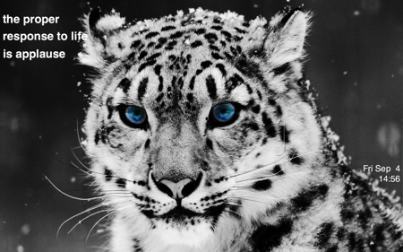
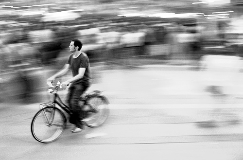
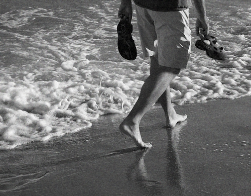
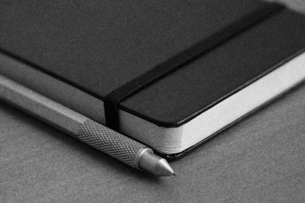
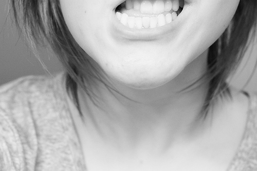
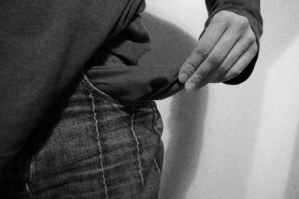
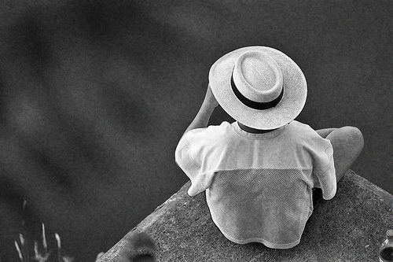

What is mnmlist.com?
It’s a site by Leo Babauta of Zen Habits.
It’s about minimalism, and why it’s important today.
It’s about stuff, and how it has come to overwhelm us.
It’s about distractions and commitments and a neverending task list.
It’s about the culture of more, of bigger, of consumption.
It’s about how less is the answer.
This blog is Uncopyrighted. Its author, Leo Babauta, has released all claims on copyright and has put all the content of this blog into the public domain.
No permission is needed to copy, distribute, or modify the content of this site. Credit is appreciated but not required.
0. Do whatever the hell you like.
Read more: Uncopyright and the minimalist mindset.

I love seeing other people’s desktops, so I thought I’d show mine as an example of a clean, minimalist desktop.
The desktop pic changes now and then — right now it’s a snow leopard, reminiscent of the new OSX snow leopard. I enjoy pics that are calm but inspiring.
I’ve removed all icons, including hard drive icons (go to Preferences in the Finder, unselect hard disks from “show these items” list). I’ve also removed the menu bar using MagicMenu.
I autohide the Dock (go to Dock preferences, and “turn hiding on”), as I never use the dock for launching applications or documents — I use Quicksilver instead. Quicksilver launches things faster than the Dock or even Spotlight, in my experience, and can do much more than launch (appending text, emailing items, cropping photos, and more).
For awhile, I was just using a blank desktop pic, with no icons, dock or menu bar, but the only thing I missed from the menu bar was the clock. So I added the time and date via GeekTool, along with my favorite quote.
Otherwise, there’s nothing there. Which is how I like it.
Note: A less detailed version of this post originally ran on Minimal Mac, an excellent blog.
As some might know, I’m not a fan of copyright. In fact, I’ve uncopyrighted this blog and my other blog, Zen Habits.
And while uncopyright and minimalism might seem at first glance to be unrelated, I believe they both stem from the same mindset.
Here’s how.
Copyright stems from a protective mindset, one that believes the creator owns his work, and must protect that ownership in order to profit from said work. The creator will share his work with others, but only at a price, and anyone who takes without paying, or uses it as a basis for further creations, is stealing.
That’s the copyright mindset.
The uncopyright mindset is that of someone who gives without any guarantee of profit, who lets go of ownership and believes the world owns his creation. He hopes to contribute to the world in a small way, and if others benefit from this contribution, that’s a good thing. And if others use his contribution to create something new and beautiful, that’s a wonderful thing.
The uncopyright creator lets go of ownership, because to hold on to ownership hurts the world, and to try to protect that ownership leads to unnecessary stress.
The minimalist also eschews ownership, at least to some degree, and believes owning things doesn’t make him happy. Doing things makes him happy. Helping others makes him happy. Creating makes him happy.
It is from this place that the minimalist embraces uncopyright, and in doing so gives to the world and hopes that the world will be better for it, at least in a tiny measure.
 Photo courtesy of brtsergio.
One of the basics of minimalism is that you eliminate as many non-necessities as you can, to make room for what’s important.
If you don’t need a ton of clothing, you get rid of much of it. If you don’t need that new gadget, you don’t buy it. Within reason, of course.
You learn to be content with what you already have, with the necessities, with doing things you love rather than having things.
But it’s funny, because often things we assume are necessities are not necessarily so. The problem is that we categorize things as necessities because we’re used to them, and we can’t see how to live without them. And it’s difficult to make big changes.
Some examples:People sometimes look at me quizzically when I proclaim that I don’t need more stuff, and that I’m constantly getting rid of what I do have.
What kind of weirdo is this? Why would you want less stuff?
Less is better.
Less means you spend less. You need less storage. You need a smaller house.
Less means you worry less. You search for things less. You are less bogged down by clutter.
Less means you’re lighter. You’re freer. You can focus on better things.
Less means you can travel more quickly. You spend less time with stuff, and more time doing stuff.
Less is more sustainable, more beautiful.
—
If you’re interested in a life of minimalism, check out my new ebook: The Simple Guide to a Minimalist Life.
Or find more of my other books and ebooks.
There is in most of us an underlying desire to buy cool stuff.
It stems from fears and insecurities, I think, but it is exploited by corporations and advertising. Advertising is designed to get us to desire more, to want to buy, and because it works so well, we end up buying way, way more than we need.
Minimalism is the exact counter to this phenomenon, and for some of us, it’s the answer.
Think of tribal societies, unexposed to consumerism or advertising. They don’t have urges to go out and buy cool new clothes or gadgets or cars or shoes. It’s not that they don’t have desires, but it’s not at the same scale as in our society.
Even in the days before advertising, these kinds of desires for more were not as prevalent. It is advertising and consumerism that have created the desires, or at least magnified them to a hugely exaggerated level. It is extremely effective.
Unfortunately, it means we are always wanting to buy more, and always spending more. Which means we must either get into debt, or work more to earn more. Or both. And today, families must have two wage earners — as opposed to only 50-60 years ago, when there was only one wage earner necessary — in part because we are trying to support a more expensive lifestyle (also because we’re being paid less in real dollars). We’re also more in debt than ever before.
We need to stop and ask ourselves — what is it all for? Why are we working so hard in order to buy so much, to have so much, to be burdened and cluttered by so much?
It’s just too much. Minimalists say, “I’m getting off this merry-go-round. I opt out.”
The minimalist first looks at needs vs. wants — is this a real need, or is it just a desire created by advertising? And if it’s a want, a desire, she doesn’t buy it.
The minimalist slowly learns to let go of desires. It doesn’t happen overnight, but it can happen, gradually, with a conscious effort.
Here’s how I do it: Photo courtesy of the sea the sea.
There’s a lot we can learn from traditional cultures such as the Native Americans. Including the idea of walking lightly upon this earth.
It’s something we’ve forgotten in hundreds of years of striving to achieve more, to produce more, to build bigger and better things.
We have forgotten to walk lightly, and instead mine the earth of its natural resources, clearcut forests, pollute rivers and lakes and oceans, alter the landscape to fit our needs, make the air dirty and the rain acidic and the ozone holed.
This isn’t news. We’re all aware of the problems, but the solutions are less obvious.
Do I buy greener products? Do I buy a greener car? Do I recycle all the stuff I use?
Well, sure. You can do all of those things, and they are useful. But even better: live a life of less, and walk lighter.
A life of less means you consume less, use fewer natural resources, pollute less, own less stuff, contribute less to greenhouse emissions.
Minimalism, the philosophy of a life of less, is more sustainable because it uses less, and thus recycling isn’t as necessary (though it’s still important). It’s not sustainable to continue to consume huge amounts of products (no matter how green they are) or use natural resources (no matter how organic).
There’s a lot to write about here, and I’ll write more later, but a few brief examples:“Walk lightly in the spring; Mother Earth is pregnant.” - Native American (Kiowa) proverb
One of the most satisfying things happens when I move to a new house: forced minimalism.
When I move — and many people are the same way — I declutter my possessions so I don’t have to move so much. I’d rather get rid of half my stuff than have to pack and move it all.
It takes some work to declutter everything, but it’s deeply satisfying. And it’s much easier these days, now that I normally keep things fairly simple. Still, there’s always an accumulation of clutter that happens over time.
When I’m done moving, I’m down to the bare essentials (plus a few other comforts). My new home is beautifully minimalist, and I’m truly happy.
I try to keep my home like this most of the time, but with all my kids, it’s not always possible.
Moving forces me to be minimalist, and it’s a time of reflection: what do I need? What do I really use? What do I love?
So my question today for you: if you had to move today, what would you take?
It might be useful to make an actual list. Then it might be useful to get rid of everything not on the list.
Just a thought.
Note: you can’t respond to this question via comments, but I’d love to hear your thoughts on Twitter or on your own blog.
The rise of clutter has given birth to a whole industry: organizing.
We now have legions of professional organizers, whole companies that sell organizing products such as closet organizers, magazines and blogs on how to get yourself organized, and of course, the hand-held notebooks we call organizers — and their digital equivalent, PDAs and mobile devices.
And while I have nothing against professional organizers — they help people to find peace in lives of chaos — I don’t think they’re necessary … if you adopt minimalism.
Organizing is only necessary when you have too many things to easily find what you’re looking for.
Think about it: when we organize a collection of books, it’s because when they’re not organized, we can’t find the books we want. But if we had, say, five books, we wouldn’t need to organize.
The same applies to anything that needs to be organized: Photo courtesy of alt1040.
The blog ‘a million monkeys typing’ (apparently defunct) has an interesting older post called Beginner’s Mind in which the author makes a list of all the information he needs to track.
Douglas takes a “beginner’s mind” approach and makes a list of every type of information he needs to keep track of, including but not limited to:How I Whittled It Down
A couple of years ago, my list would have been much longer. For example, at one time I tracked all my spending, all my debt, every bill and when it was due. I don’t anymore. At one point I tracked all my eating, every calorie, and every calorie I burned through exercise. I also had a much more complicated productivity system (based on GTD), where I tracked not only tasks (“next actions”) but projects and someday/maybe items and delegated tasks and so on. At one point I had a list of goals and sub-goals and action items for each one. And more, but I won’t bore you with all the details.
It’s also important to note that most of these changes haven’t come because of my lifestyle, but my attitude: I worry less about goals, tracking calories, finances, and the like, and because I worry less, I track everything less.
How I Can Pare It Down FurtherOne of the hardest things about becoming minimalist, for most people, is letting go of possessions.
It’s tough, I won’t lie.
Letting go can be an amazing release, and when you do, you’ll feel liberated and light. But allowing yourself to let go is an emotional thing, and as with anything emotional, it’s not always simple.
There are a few emotional reasons we have a tough time letting go of possessions. A little while ago, I read an excellent series on learning to let go of clothes from The Very Small Closet, and several reasons were given for this difficulty:1. Focus on the present. Sure, we might have feelings about the past, and worry about missed opportunities in the past, but those are gone. If we focus on the present — enjoying this time, without the need for all these possessions, we can let go of the past. Be happy now, not tied to memories or missed opportunities of the past. If we get stuck in the past, we are missing the opportunities of the present.
And fears of an uncertain future can also be banished if we focus on the present. The future hasn’t arrived yet — the present has. We have no idea what the future will bring, so worrying about it is a waste of time. We’ll cross that bridge when we get there. Instead, focus on living now, in the present. And when you do that, you realize you don’t need any of these possessions. All you need is to make the most of this moment, right now.
2. Focus on quality over quantity. Sure, it might feel good to have a lot, to have that feeling of “plenty”. But if instead we focus on quality, and not quantity, we can get an even better pleasure. Having a few good things is so much better than having a lot of things. Enjoying small pleasures, now, is better than the fleeting and unsatisfying feeling that possessions give us.
So focus on the present, and let the past and future fade away. Focus on quality over quantity. And in doing so, banish our emotional ties to possessions, so that we can let them go.
It’s not as easy as it sounds, I know. But it can be done, and when you do it, you’ll feel amazing.
 Photo courtesy of hnnhlh14.
One of the biggest challenges for anyone wanting to live a minimalist life is not internal but external — their loved ones aren’t on board the minimalist train.
How do you deal with that? What’s the simple solution?
There isn’t one.
Dealing with others who might be hoarders, clutter-bugs, just plain messy, or maybe just regular people who don’t care about minimalism … it’s not easy. It’s so much easier to live alone and not have to worry about the living habits and preferences of others, but many of us don’t have that “luxury” (although there are a few benefits of living with those who love you).
Here are some strategies that have worked for me. Your mileage will definitely vary.
1. Focus on yourself. While your spouse or partner or children may not want to declutter their lives or live without consumerism, you can, at least in the areas you control. You can stop buying. You can get rid of things you personally own that you don’t need. You can find joy in doing rather than owning or buying. You can reduce what you do, what you consume, what you eat, and so on. These you control, and they should be your first focus. Sometimes, it will be your only focus, if the strategies below don’t work.
2. Lead by example. You must remember that others are people with their own beliefs and way of living — which you cannot control. However, you can influence them. And one of the best ways of influencing others is by example. Live a life of minimalism, and show how wonderful it can be. Show how easy — and actually fun — it can be to declutter. Show how happy you are. Share it all with those around you. Do it without trying to push it on them, because they will react negatively to being forced or nagged into doing anything.
3. Educate. Often people are against change because they don’t know enough about it. Combat this ignorance with non-pushy education. Talk with your loved ones about what you’re doing and why. Show them examples of people who inspire you. Send them links to mnmlism.com, Zen Habits and other blogs and magazines you enjoy — not as a hint, but as a way to share things you’re excited about. Over time, they’ll start to understand, and maybe even join you.
4. Ask for help. Your loved ones, most likely, care about you. They want you to be happy — but want to be happy themselves. Enlist your loved ones’ desire to make you happy … ask them for help. Say, “I need your help in getting to the minimalist life I want. Do you think you can help me?” Of course, if you’ve educated them, they already know what you want, but most people would love to help you if they can. Don’t ask them to change, but ask if they can help you declutter, or keep a certain area uncluttered, or figure out a solution to a problem you’re facing.
5. Set boundaries. If you can’t get a loved one on board, it helps to set boundaries. For kids, ask them to keep their clutter to their rooms. Give them that personal space, and don’t bug them about it. For adults, you might designate certain rooms or areas as yours and others as theirs. I’ve known some people who’ve split rooms or entire homes in half — one side is uncluttered, and the other was … not.
6. Find compromises. Living with other people means finding ways of living that work for everyone. That might mean you need to give a little, if you want to ask them to give a little in return. Be willing to accept a less-than-perfect solution, if the solution will work for everyone.
7. Find acceptance. In the end, you might not win over the people who live with you — and you can either be frustrated or angry with that, or you can accept it. The second option is preferred, as you’ll have more peace of mind. It’s not easy, and will require you letting go of certain expectations, letting go of a need to control, and learning to love someone for who they are, not who you want them to be. But in the end, the effort will be worth it.
Taming a closet full of clutter can be a fearful thing.
It’s overwhelming, and we imagine it being a feat of herculean proportions, taking weeks if not decades.
Our minds, however, are exaggerating just a bit. Decluttering a closet doesn’t have to be so intimidating or arduous a process.
Here’s how to do it, simply. Please note: we are not going to teach you how to organize your closet. We’re going to teach you to empty it of all but the essentials. Read more: minimalism is the end of organizing. So you won’t get a list of fancy closet organizers to buy. We’re selling and donating here, not buying.
1. Set aside some time, and get some boxes. You might need a couple of hours. Or a few, if your closet is huge. Set aside an evening, if you have time in the evenings, or half a weekend day. Get boxes ready. You might need half a dozen or more, depending on how much junk you have.
2. Take everything out, empty it into a pile. All of it. Alternatively, you could choose to do this one section at a time, which could be less overwhelming — but it’ll take a few extra steps, as you’ll have to repeat these steps for each section. Either way works.
3. Quickly sort into 3 piles. Do not dilly dally, or sit on the fence. Here are the choices: keep, toss, or maybe. The maybe is only if you really really have a hard time deciding — you’ll put these in a box and store them for 6 months, getting rid of them after that time if you never needed them. The keep pile is for stuff you really love and actually use — if you haven’t used it for 6 months, put it in the toss pile. OK, 12 months for seasonal clothes (such as winter coats). If you have trouble getting rid of things for sentimental or other emotional reasons, see how to let go of possessions.
4. Clean, then put the keep pile back, organized. OK, everything sorted? Clean out the closet nicely. Put the keep pile back in the closet (unless the stuff belongs elsewhere). Put it back neatly, organized. This doesn’t have to take long. Leave spaces between things if you can.
5. Deal immediately with the other piles. Take the maybe pile (I hope you kept this pile small) and put it into a box or two. Label it maybe, with today’s date. Store it somewhere out of sight, and don’t open it for 6 months. Toss the stuff in 6 months. Take the toss pile, and put it into boxes — stuff you’ll donate to charity, stuff you’re going to give to friends, maybe other stuff you’ll sell in a yard sale or on eBay. Throw the actual trash away, or recycle.
Optional step 6: Breathe, and bask in the glory of your beautiful new minimalist closet. Enjoy a cup of coffee or tea, and just admire. So minimalist, so pure. So lovely!
A few more tips: Photo courtesy of stuartpilbrow.
How much do you carry around with you, every day?
It’s something we don’t often think about, but each item we carry around is a little burden, and these little burdens add up.
They contribute to our general fatigue, they are one more thing to worry about, and they can cause actual back problems if we carry too much.
This is something I’ve greatly improved in my life, starting a couple years ago when I decided to try to be as minimalist as possible.
As Robert Daeley said in an old post, Zen Pockets:In the spirit of GTD, in which you try to empty your head of all the cruft and worry so you can concentrate creatively on the task at hand, let us look to our burdens to see if we can’t undo a little of our daily Sisyphean-wear. Mind like water? Meet pockets like air.Let’s see how we can get to pockets like air.
You’ll notice I don’t carry lots of electronics around (I’ll only bring the laptop once or twice a week), I don’t have a watch, I don’t have much in my “wallet”, I don’t have any grooming products (of course, my shaved head helps with that).
How I got to minimalist
I didn’t get to this point overnight. I got this way by reducing my needs, and examining each item to see whether I really needed to carry it.
1. Reducing needs. As I mentioned, when I decided to shave my head, it meant I didn’t need any grooming products. Now, I’m not saying you need to shave your head, but consider finding ways to reduce your need for these products by simplifying. I also decided I don’t need a watch, because (1) I prefer not to worry about time so much and (2) if I do need to know the time, I can check my cell phone. I decided I don’t need a mobile device such as an iPhone or Blackberry, because while it would be nice to check email or look something up online or check on my website or business while I’m out on the road, I would rather not have that constant distraction. I like being in the moment, especially when I’m with my wife or kids or a friend. I like not being interrupted. Think about your needs and whether they’re really needs, or if they can be eliminated or reduced.
2. Put each item to the test. Consider each item you take with you, and whether you really use them every day. If not, only take them on days when you will need them. If you carry a briefcase full of files you never open, why carry them back and forth? In fact, why not keep your files on your computer, and just access them online, from anywhere? If you have a purse or messenger bag, make each item in the purse or bag pass this critical test: Do you really use it, all the time? Do you really need it? If not, consider leaving them at home or, if you can’t decide, put them in your glove compartment so you don’t have to carry them around. I did this for awhile, just to feel safe, and I ended up not ever needing the items.
Be light
It’s nice to walk around without things weighing you down. You feel light and free. It’s less of a burden.
There’s something peaceful about walking around without these distractions. You can focus on the wonderful world around you. You can talk to a friend or family member without interruptions. You can create without distractions.
Walk lightly, and be light in your heart.
Some frequently asked questions (FAQs) about minimalism and living the minimalist life, for those new to the concept.
Q: Why be a minimalist?
A: It’s a way to escape the excesses of the world around us — the excesses of consumerism, material possessions, clutter, having too much to do, too much debt, too many distractions, too much noise. But too little meaning. Minimalism is a way of eschewing the non-essential in order to focus on what’s truly important, what gives our lives meaning, what gives us joy and value.
Q: Isn’t minimalism boring or too sparse, with nothing in your life?
A: This is a misconception about minimalism — that it’s necessarily monk-like, empty, boring, sterile. Not at all. Well, it can be, if you go in that direction, but I don’t advocate that flavor of minimalism. Instead, we are clearing away all but the most essential things — to make room for that which gives us the most joy. Clear away the distractions so we can create something incredible. Clear away all the obligations so we can spend time with loved ones. Clear away the noise so we can concentrate on inner peace, on spirituality (if we wish), on our thinking. As a result, there is more happiness, peace, and joy, because we’ve made room for these things.
Q: What is minimalist living?
A: It’s simply getting rid of things you do not use or need, leaving an uncluttered, simple environment and an uncluttered, simple life. It’s living without an obsession with material things or an obsession with doing everything and doing too much. It’s using simple tools, having a simple wardrobe, carrying little and living lightly.
Q: What are the benefits of minimalism?
A: There are many. It’s lower in stress. It’s less expensive and less debt. It’s less cleaning and maintaining. It’s more enjoyable. There’s more room for creating, for loved ones, for peace, for doing the things that give you joy. There’s more time for getting healthy. It’s more sustainable. It’s easier to organize. These are only the start.
Q: What does the schedule of a minimalist look like?
A: There’s no single answer to this question, but a minimalist would probably focus on doing less, on having a less cluttered schedule, but what’s on his or her schedule would be important. A minimalist might not actually keep a schedule or calendar, at one extreme, if he didn’t have much to do each day — he might instead live and work moment-by-moment, or just decide each morning to focus on one or two important things.
A minimalist would also save a lot of time because of having less clutter and fewer possessions. That means less time cleaning and maintaining, and less time searching for things. A minimalist who clears away distractions and single-tasks would also waste less time with those distractions and in switching back and forth between tasks (multi-tasking).
In general, all this results in more time for relaxing, for hobbies, for creating, for doing fun things.
Q: What rules do I need to follow to become minimalist?
A: There are no set rules. There’s no one way. What I suggest for living minimally isn’t what someone else would recommend, nor is it how you would live your minimalist life. In general, however, you want to live simply without too many unnecessary possessions, distractions, clutter, or waste. You want to live frugally, debt-free, sustainably, naturally.
Q: Do you need to be vegan or vegetarian to be minimalist?
A: No. While I believe the vegan/vegetarian lifestyle is consistent with minimalism, you can eat simply as an omnivore as well. Again, there’s no one way. A minimalist would try to eat naturally, without too much processing, and not eat too much food (such as the ridiculous portions at most restaurants these days).
Q: I believe in simplifying, but why should I be so frugal — what wrong with a few REALLY nice things?
A: Frugality is simply a way of not spending on unnecessary things — sticking to the essentials. Is there anything wrong with a few really nice things? Not necessarily. If you need to buy something, it’s usually better to go for quality, rather than cheap, because it’s better made and will last longer. Minimalism is about quality over quantity.
However … it’s always good to examine whether it’s good to have an attachment to material things. This isn’t something I’ve completely succeeded with — I love my Mac, for example — but it’s something I’ve been working on. I am much less attached to possessions than I was just a few years ago, and I recommend that everyone examine their relationship with physical things, with products, and see if it’s really what they want.
Q: What about finding minimalism in America — where you need to have a car and a job?
A: This whole site is about finding minimalism within the American culture and society — as well as other industrialized nations — not on some remote desert island. The complexities and social expectations of the United States (and other industrialized countries) is exactly why minimalism is needed. All the advice I give on this site (and Zen Habits) is aimed at people in these modern societies.
I’ve lived a minimalist life on Guam, and now in San Francisco. It’s a matter of choices.
Do you need to be as minimalist as me, or someone living in the wilderness? Not at all. It’s not about that. It’s about finding simplicity and finding what’s important to you, and making choices, rather than adopting the consumerist mindset that most people have.
Q: Aren’t you being contradictory by claiming to be a minimalist and owning a Mac, or a house, or having six kids?
A: Again, there’s no one way. Everyone must find his own path, and mine is different than what someone else would consider minimalist. Also, I have never claimed to be perfect – I’m striving for minimalism, but I always have room for improvement. I have things that are inconsistent with minimalism, or at least by the definition of others. I’m working on it.
I should say a word or two about having six kids and minimalism. Having six children is inconsistent with my message of simplifying, frugality, downsizing, being green.
I don’t have a defense – but I do have an explanation for the inconsistency. I had my kids before (and during) my change in philosophy. In fact, my philosophy is evolving even now, so I can’t claim to have believed in the things I believe in now, for a very long time. Many things I believe in are only recent developments.
As an example – only recently, I made the decision to transition back into veganism (I was vegan once, but have been lacto-ovo veggie for over a year). But I own a pair of leather sandals – do I throw them out? Wouldn’t that be wasteful? Is it better to be wasteful but consistent with my beliefs? It’s hard to say.
However, I have decided it would be most unethical for me to throw out my children, just because I now believe in downsizing. It was a tough decision, but I’m sticking by it.
As a result of my simplifying, I am able to enjoy my time with my children, and I have to admit, they are the best thing to happen to me. I don’t regret having them one bit, even if they are inconsistent with my philosophy of downsizing.
On the good side, I believe that even with six kids — being vegan, buying less stuff, being energy conscious, going car-less, walking more for transportation – I actually use fewer resources than the average person in developed countries (and far less than the average American) – this is according to online carbon footprint calculators. It’s not a justification for having six kids, but just a note that things aren’t as bad as they could be.
Q: Why don’t you have a comment button or comments on this site?
A: I purposely didn’t include comments on this site for a couple of reasons:
1. I already manage several other blogs, and get a ton of comments at Zen Habits, and having to manage another blog’s comments is too much for me. I just don’t have the time, and if I had to do it, I couldn’t do this blog.
2. I love dialog with readers — it’s what makes blogging such a joy — but commenting isn’t the only way. I encourage you to reply to me about any of these posts via Twitter or on your blog. The dialog then will be less local and more widespread.
3. I like the idea of keeping things simple on a blog about minimalism.
Q: How is mnmlist.com different than Zen Habits?
A: Well, Zen Habits is about simplicity, and mnmlist.com is about minimalism — can’t you see the difference?
Seriously, though, there will be a different focus here than at Zen Habits, which covers a wide range of topics besides simplicity, including productivity, changing habits, health & fitness, family, finances, happiness, and yes, simplicity.
This blog will focus pretty much exclusively on minimalism, a passion of mine. Not all Zen Habits readers are incredibly interested in minimalism, so I’m breaking off this blog for those who are.
If you have other questions that I should include here, please let me know on Twitter!
 Photo courtesy of James Jordan.
Most of us are pretty busy, just about every day.
Some like it that way — being busy is almost a status symbol, as it shows you’re important and productive and a go-getter and achiever. If you’re in a power meeting and sending emails on your Blackberry and making calls, you must be important, right?
I say we should reject that little game of who’s busier than whom. We should opt out. We should say, “I’d rather find peace of mind, and be able to relax, and really enjoy life, than allow it to pass me by just so I can be ‘productive’ and show everyone how important I am.”
OK, maybe say something shorter instead. Like, “No thanks.”
Why busy is a fool’s trap
Thing with busy is, it never ends. You’ll never get out of it (unless you make a very conscious effort), because there is no end to the to-do list, the emails, the IMs and phone calls, the meetings and meetings and yes, more meetings. We’re hamsters on a treadmill, running for no real purpose, except to make a boss happy, to make money for someone else, or perhaps to make money for ourselves … but to what end?
The treadmill will never end. There is never an end, because there is no destination.
But guess what? The journey is the destination. We are already there — what we do today is what our life is, what it’s all about. Is being this busy really the meaning of life? Or is there something more? Is there a better life?
I believe we should eschew busy-ness for things with more value. Eschew the urgent for the important. And even then, if we’re doing important things, we should not fill every minute with important things. We need to learn to relax, and be happy, and enjoy life. Otherwise, it’s not worth living.
We need to rediscover what it’s like to do nothing, to sit still, to enjoy silence. We need to put more space in between things, instead of cramming them together all the time. Let’s stop being busy, and start being happy.
How to be less busy
It starts with a decision: I want to be less busy. I don’t want to do this anymore.
What follows really depends on how much control you have over your day.
If you have at least some control: Make two lists: your ideal day, and all the things that fill up your day (all your commitments). Start by eliminating commitments that are not essential, that don’t make up your ideal day — call or email people and tell them you can no longer commit to the commitment, that you don’t have the time. People will be disappointed but will live.
Then start following your ideal schedule. Be sure there’s spaces between things, so you’re not rushed. Leave large blocks of time wide open, so you can focus on creating or doing what makes you happy. Leave at least one big block for doing non-work stuff, whether that’s spending time with family, or exercising, or doing a hobby, or just relaxing.
Look at your to-do list and see what you can eliminate or delegate or postpone until later. Each day, just choose one or three things to focus on. Have a block of time designated for doing emails and phone calls and smaller tasks, so they don’t interrupt you throughout the day.
Disconnect from the Internet for large chunks of time. When you go places, turn your mobile device off, or leave it behind, so you can be disconnected from the online world and interruptions, and connected to the real world and real people. Clear away distractions and interruptions so you’re not always switching your attention between things.
Avoid meetings. Seriously. They fill up our days without being productive.
Single-task instead of multi-task. Focus on important things rather than a bunch of little things. If you get caught up opening new tabs to read, bookmark them later with delicious or instapaper or some other service.
And enjoy the peacefulness. Relax, take naps, breathe.
If you have little control: See how much of the above you can already implement — you might get further than you think. Mapping out an ideal day, eliminating commitments, simplifying your to-do list, single-tasking, clearing away distractions and interruptions … most people can do most of these things, or if not most things then at least a few.
Also, talk to your boss. Tell your boss that you’d like to be more “productive” and that the interruptions and meetings are getting in the way of accomplishing more important things. Tell your boss what you’d like to accomplish, and what you’d like to change about your schedule. Work out a compromise.
Also, think about changing jobs, if you really have no control. This is a longer-term change, obviously, but it’s possible, and maybe even desirable. Something to consider, at least.
In the end, whatever changes you make, you can be less busy simply by changing your mindset, to one where you live in the present rather than always thinking about other things. Slow down, breathe, enjoy every moment. Learn to focus on what’s in front of you, and find peace in whatever you do.
Then raise your fist against the world in victory and laugh quietly, having beaten this busy busy world.
Many of us are slaves to the news, to the need to keep updated with what’s happening in the world, in our business niche, with our friends.
We are info junkies in some way: we watch TV news all the time, or entertainment news, or keep up with lots of blogs, or our RSS feed reader, or Twitter, or Digg or Delicious, or email, or one of the many news aggregator sites.
It consumes much of our day, and creates a kind of anxiety we’re barely aware of, this need to keep up.
What is this need based on? Why can’t we get free of it?
Actually, we can get free. I’ve done it in my life, to a large extent. Let’s examine the two questions.
In short: fear.
If we really think about it, we’re not gaining much by keeping up with all this info. How is it adding to our lives? How is it helping us to create, to live happy lives, to do what’s most important to us, to spend time with our loved ones? If anything, it takes away from these things.
Let me repeat that point: this obsession with keeping up with information takes away from the things that are most important to us.
But we try to keep up because we’re afraid:These fears seem reasonable, until we test them. Then we can see that they’re not really grounded in anything other than societal norms, and a “need” created by media corporations and similar companies.
Two ways: 1) examine each fear individually, and 2) test them.
When we shine a light on our fears, they lose power. When we test them to see their validity, they will usually fail, and we can overcome them.
Let’s shine a brief light:
The next step is to actually test the fears. Do this by tuning out of the news or whatever info you try to keep up with, for one day. Then see if any of your fears came true.
If not, feel free to read the news you want, peruse the websites you follow. Then try a second test of two days — see what happens. Keep repeating this, but extending the test, until you can go a couple weeks without staying up to date. Then see if your fears are true.
Testing will show you facts. You’ll see if something bad happens, or if you appear ignorant, or if you miss out on big opportunities. You’ll also see whether you are freer to live the life you want.
But buying is not the solution. Or at least, it rarely rarely is.
Instead, buy less. Stop yourself before going out to buy things. See what you already have that you can use. See if someone else has it that you can borrow or trade or barter for. See if you can solve the problem without anything new.
Just a few examples:—
Ironically, you might have noticed I’m selling an ebook on minimalism: The Simple Guide to Living a Minimalist Life. It’s $9.95, it’s Uncopyrighted, and it’s DRM-free.
You do not need to buy this ebook in order to live a more minimalist life. This blog will offer free ideas, as do other blogs, and you can do it on your own simply by reducing what you have and what you do down to the essential.
However, I do offer this ebook as a way to save you some time in doing a lot of research, and I hope if you do buy it, you’ll find it useful. I charge money for it to 1) raise money for a good cause and 2) help pay for my living expenses.
When our houses or offices get piled with clutter, much of the reason is procrastination.
We all procrastinate — let’s just get that out in the open. There’s not a one of us who doesn’t, to some degree.
But while our tasks and projects can pile up, giving us some anxiety, the clutter is a visual sign of that procrastination, and carries with it just as much anxiety.
When we put down an object, a piece of paper, an article of clothing, a stack of mail … and we leave it there, undealt with, saying that we’ll put it away or deal with it later … that’s procrastination.
Unfortunately, this piles up, accumulates over time, and then we’re stuck with a mountain of clutter that’s too overwhelming to deal with.
You’ll need to deal with that mountain. I’ve shown you some methods. Get it down to minimal, and enjoy that.
But once you’ve dealt with the mountain, you need to stop it from happening again. That’s where beating your procrastination habits becomes so important.
When you’re going to put something down, deal with it right now. It only takes a few seconds.
How long does it take to put dirty clothes in the hamper, or hang up a shirt that’s still clean? Like 15 seconds. How long does it take to sort through some mail, opening the envelopes right there, setting aside a few bills to be paid, filing a couple things, tossing the rest? Three minutes. How long does it take to put a book or magazine away? To put a piece of paper in the right file, or toss it? Seconds.
When you deal with things in tiny little bits like this, before they build up, it’s easy. Deal with them while they’re easy so you don’t have to deal with them when they’re hard.
When it comes to technology, I strongly believe that simpler is better.
We tend to take advantage of our increasingly powerful computing power by always increasing the complexity of our tasks and data — no longer is everything text-based (as the web used to be, way back when), but now everything is graphical and increasingly uses video.
The result is a richer visual presentation, which is wonderful, but at the same time pages are slower to load, applications become bloated and freeze up, and information that could be presented simply and quickly is now presented via video, making us wait minutes just to get one or two key pieces of information.
Complexity is bloated, slow, burdensome. Worse yet, our data is often tied up in proprietary formats, in databases that can get corrupt, in formats that don’t speak to other programs.
Simplicity is fast, lean, light. Data in simple formats — such as text — is mobile, can be ported to any program, is not locked into a proprietary program or database.
I’m moving more and more toward text files, after having been a fan of more complex formats and programs for a few years.
I love programs like Evernote, Yojimbo, even the simple Notational Velocity — but the truth is, text files are just as good. And they’re faster and simpler.
I can load my favorite text editor (TextEdit, super simple) and be typing in two seconds. It takes a few extra seconds to load a bigger program such as Evernote or Yojimbo, and each of these takes up way more system memory and slows things down. Even the lightweight Notational Velocity, a great program, stores info in a database that can be corrupted, in a format that can’t be ported elsewhere.
While I love graphical programs, they are just overkill for my needs. Your needs may be more complex, more demanding, but mine aren’t.
I write posts, articles, books in TextEdit (or WriteRoom, when I feel too many distractions), then paste them wherever they’re needed.
I keep notes, todo lists (when I need them), other info I need saved, in a text file or three. They can be popped open in half a second, and with a quick “Find” command, I can find any info.
Again, my needs are purposely simple. And text files are purposely minimalist, lightweight, fast, lean, and thusly beautiful.
—
Updates:
A minimalist Mac setup is lightweight, lean, uncluttered, with simple apps.
As a result, things run at a blazing speed, without bloated applications to slow things down. Work is frictionless, and doesn’t take long.
I highly recommend this setup for anyone looking to keep things simple and fast. It’s not recommended for those who are into the latest, coolest applications or who aren’t into simplicity, or who have heavier needs than mine.
Philosophy
1. No clutter. A cluttered desktop is a distraction. So is a Dock that has 21 icons. So is having a ton of windows open. Keeping your Mac clutter-free minimizes distractions and confusion and allows you to focus.
2. Keep the system lean. Modern systems tend to be bloated, because they offer so many cool features. I don’t use most of these features. On the Mac, they include: the Dock, Spotlight, the Dashboard, Spaces, Expose, Automator, the menu bar, Bluetooth, MobileMe, Print & Fax, Time Machine, the Screen Saver, and much more. I recommend against using these features, as they just slow things down most of the time. Unfortunately, you can’t turn most of them off without some serious hacking. Turning some of them off helps keep the system lean.
3. Simple, single-purpose apps. Modern applications try to do too much. They want to be everything, but that leads to feature bloat and memory hogs. It takes a long time to load big apps, and they often crash or slow things down. Instead, keep apps as simple as possible. They should be lightweight, and if possible, have only one purpose and few features.
4. Simple formats. I prefer text files for storing things. Most other formats, such as databases, are bloated, corruptible, often proprietary, and not compatible with other programs.
5. Don’t fiddle. Choose a path, and then just stick with it. Geeks like me tend to always try the latest and greatest apps. Forget about it. Choose some simple apps and just get your work done.
The System
Most of what’s included in the Mac (and Windows, for that matter) is unnecessary for getting simple tasks done. Remove what’s possible, hide the rest.
The following setup will allow you to open your apps and complete your tasks as quickly as possible, without the need for complicated features.
1. Hide Dock. If someone knows how to kill the Dock, please let me know. Or any of the other features mentioned in the previous section. I’ll add it below. As for now, I’ve just put the Dock on auto-hide (“Turn hiding on” in Dock preferences) so it’s not usually cluttering the desktop. I’ve also removed everything from the Dock other than the Trash.
2. Kill Spotlight. I’ve rarely needed Spotlight, and it takes up a lot of system resources to index your computer. It’s a powerful tool, but too powerful for my needs. Here’s how to kill it.
3. Kill Spaces, Expose, Dashboard. Again, two things I never use. If you need these tools, you might have too many windows open. If you don’t need them, kill them. Here’s how.
4. LaunchBar or Namely. Instead of the Dock, use a launcher. Quicksilver was long my favorite tool on all of Macdom, but I’ve recently realized I don’t need all that power. Spotlight can be used as a launcher if you keep it open, but again, it’s a bit too much power just for launching apps. I recommend LaunchBar to launch apps, folders and files — but you’ll need to go into the preferences and uncheck a lot of things it indexes by default (I only have it index my apps and most commonly used folders). A great alternative is Namely, which only launches apps and is very lightweight. LaunchBar is just as fast, though, in my testing. TextExpander is a good addition for quickly inserting commonly used text.
5. Keep inactive apps hidden. If you’re using one app, hide the rest. This keeps the distractions to a minimum. It’s simple on the Mac: press Cmd-H when you’re done using an app for now (or Quit if you’re done for awhile). Or Cmd-Option-H to hide all apps other than the one you’re using right now. When you need to switch to an open app, Cmd-Tab will cycle through all the open apps. Btw, if your apps are lightweight and lean, switching between them is a snap. It truly makes a difference.
6. Clear the Menu Bar. Many people have cluttered Menu Bars, but I find it distracting. Control-click (or right-click) any icon in the menu, go to its preferences and remove it from the Menu Bar. Or remove the Menu Bar completely if you never use it (as I don’t, because I access everything from the keyboard).
7. Clear icons. Remove all desktop icons. Having icons on your desktop is a distraction, and an inefficient way to launch apps, folders or documents. Use a launcher or hotkeys program instead, such as LaunchBar. To clear your icons: put them all in a folder in your documents folder. Then go to the Finder’s Preferences, and uncheck all items under “Show these items on the desktop”.
Simple Apps
These are the apps I recommend for a minimalist setup – lightweight, fast, without bloat or too many features:
1. Writing: TextEdit or WriteRoom. Full-featured word processors such as Word and OpenOffice are overkill if you just want to write. Many writers and bloggers get caught up in the perfect writing software, but really all we need is text. Don’t let the software distract. Just write. When you need to format it, use blogging software such as WordPress (for posts) or layout software for ebooks. But at the writing stage, just write.
2. Notes and to-dos: Notational Velocity and text files. I mentioned before that I just use text files. Well, now that I know that Notational Velocity can store info as text files, I recommend it for keeping text notes — it’s lightweight and blazing fast, and it keeps all your notes organized and quickly searchable. For to-dos, I just use a text file.
3. Web: Opera. My absolute favorite browser right now, for its speed and power. Firefox is the most powerful, but also bloated, crashes, slow, and hogs memory. I also like Chrome and Safari but they’re either too unstable (in Chrome’s case, as it’s only a developer’s build right now) or too big (in Safari’s case). Opera is light and really fast, plus it has some great features such as speed dial, keyword shortcuts for bookmarks, notes and much more, that really make the web experience a fast one for people like me who work on the web.
4. Blogging: WordPress and Transmit. I use WordPress because it’s free and does everything you need it to. I’d use a lighter weight blogging software if I could find one that did everything I need and just worked. Panic’s Transmit is for FTP, and works brilliantly. I used to use Cyberduck, because it’s free, but it’s slow and doesn’t work as well as Transmit.
5. Photos: Preview and Picasa. I use Preview not only for viewing photos and PDFs, but for cropping and resizing photos for my blog. Picasa is fast and does everything a photo app should do – much faster than iPhoto.
6. Multimedia: PicoPlay and VLC. iTunes is way too bloated for playing music or videos. These days I just use it to play stuff on my AppleTV. PicoPlay is small and light, for playing your iTunes library and playlists. VLC is light and plays pretty much any video format.
7. Comm: Skype, Twitter. I don’t use IM programs. Skype I use for audio calls. For Twitter, I don’t use a dedicated app anymore — I just use the web interface, as it doesn’t require a separate app that will hog resources.
8. Syncing: Dropbox or Google Docs. As most of my stuff is now stored in text files, I can easily sync with other computers via Dropbox, a great app. Google Docs is still great, but not as fast as text files. I use Google Docs for sharing stuff with other people.
9. Mail & calendar: Gmail & Gcal. Apples Mail and Calendar apps are too bloated for my needs. Gmail is much faster and just works so much better than any other mail program. Same for Gcal.
Alternatives
The apps I use are just my current preferences. I’ve used others and can recommend them — and there are many more out there I haven’t tried. This post isn’t meant to be exhaustive, but instead illustrative of the type of apps I mean.
Some good alternatives:
1. Launcher: Quicksilver. Probably the favorite launcher out there, and one of my favorites until recently. It’s a really powerful tool — just a little too powerful for my needs. It doesn’t just launch apps, it can do so much more: set up hotkeys for your favorite documents or folders, insert text quickly, append text to a file without having to open it, resize a photo, add an item to your to-do program, and on and on. All of this without opening other programs. Takes some fiddling to really explore its full potential, but it works as a launcher right out of the box.
2. To-do: Anxiety or Taskpaper. There are many great to-do programs for the Mac (Things, iGTD, OmniFocus, Kinkless and more) but they’re all overkill for my needs. I love both Anxiety and Taskpaper for their simplicity. At the moment, I just use text files, but I’ve used both these programs and highly recommend them.
3. Word processing: Bean. If you need a full word processor, this is one of the best lightweight ones.
4. Web: Google Chrome, Safari, Camino or Sunrise. Chrome isn’t available for the Mac except in developer builds (as well as the Chromium developer builds), but it’s lightweight and fast. Unfortunately, a little unstable for my needs, and doesn’t render everything I need, so I’ll wait for the official release. Safari 4 is much faster than previous versions, and worth a look. Still too heavyweight for my needs. Camino is a great lightweight alternative to Safari, based on the same webkit renderer, without all the features. Sunrise is the lightest of them all — unfortunately, not stable enough for regular use.
5. Notes: Evernote or Yojimbo. Two great programs, if you have need for more than text notes. I don’t, but if I did I’d use one of these. Yojimbo is better, but Evernote wins for those who want access to their notes from anywhere — multi-platform and on the web.
Further reading“By letting it go it all gets done. The world is won by those who let it go. But when you try and try. The world is beyond the winning.” - Lao Tzu
One of the unshakable tenets of success and productivity literature is that you need to have goals in order to be successful (see Seth Godin on this – he’s someone I respect, btw).
And from this tenet comes all sorts of other beliefs:
I know this, because I’ve believed it and lived it and written about it, for a long time.
Until recently.
Until recently, I’d always set goals for myself — short-term and long-term ones, with action lists. I’ve made progress on each one, and accomplished a lot of goals (read My Story for more). And from this traditional viewpoint, I’ve been successful. So no argument there: goals work, and you can be successful using goals.
But are they the only way?
More recently I’ve moved away from goals, broken free of the shackles of goals. I’ve liberated myself because goals are not ideal, in my way of thinking:
But most of all, here’s the thing with goals: you’re never satisfied. Goals are a way of saying, “When I’ve accomplished this goal (or all these goals), I will be happy then. I’m not happy now, because I haven’t achieved my goals.” This is never said out loud, but it’s what goals really mean. The problem is, when we achieve the goals, we don’t achieve happiness. We set new goals, strive for something new.
And while many people will say that striving for something new is a good thing, that we should always be striving, unfortunately it means we’re never satisfied. We never find contentment. I think that’s sad — we should learn how to be content now, with what we have. It’s what minimalism is all about, really.
And if minimalism is being happy now, with enough, with the present, then how are goals consistent with this? It’s something I’ve tried to reconcile over the last few years, with limited success.
So what would a true minimalist do instead? If we are content now, and we abandon goals, does that mean we do nothing? Sit around or sleep all day?
Not at all. I certainly don’t do that. We should do what makes us happy, follow our passions, do things that make us excited. For me and many people, that’s creating, building new things, expressing ourselves, making something useful or new or beautiful or inspiring.
So here’s what I do, instead of setting and achieving goals:
I do what excites me. Each day. I wake up, and work on things that I’m passionate about, create things that I love creating.
I don’t worry about where I’ll be (professionally) in a year or even six months, but where I am right now.
I don’t make plans, because they’re an illusion — you never know what will happen in a year or even six months. You can try to control what happens, but you’ll lose. Things always come up, sometimes good and sometimes bad, that will disrupt plans. Instead, I’ve learned to go with the flow, to not worry about things that disrupt plans but worry about what to do right now. This allows me to take advantage of opportunities to come up that I could never have planned for, to work on things I couldn’t have known about, to make decisions about what’s best right now, not what I planned a few months ago.
I don’t force things, but do what comes naturally.
And I focus on the present, on being happy now.
This has taken me time — letting go of goals is a scary and uncomfortable thing, but if you let them go gradually, it’s not that hard. I’ve slowly adapted the way I work, and learned to work in the moment, and go with the flow of the world that surrounds me (online and off).
It’s a beautiful way of working. And not incidentally, I’ve accomplished even more this way, without making that a goal. It’s a natural byproduct of doing what you love.
“A good traveler has no fixed plans, and is not intent on arriving.” - Lao Tzu
Often we think about cutting down on what we buy because we’d like to be frugal, and save money. And I’m all for that.
But there’s more to buying less. Way more.
The cost of purchasing an item just scratches the surface. When we buy something, we are taking it into our homes, our lives, and we are taking on the life of another object in this world.
The life of an object? But surely you’ve gone mad, Leo.
It’s entirely possible I have — I’m talking to myself in this post, after all. But hear me out, O hypothetical reader in my mind.
An object isn’t born in the store. It is born in the woods (if it is wood), in the mines (if it’s metal), in the depths of the world (in the case of petroleum-based products such as plastics, synthetic textiles and such), or perhaps all three places and more if it’s a combination of materials. It’s born when those natural resources are mined or harvested (at great cost and great cost to the environment), and then hauled to a factory somewhere, a factory that pollutes, inevitably. It’s shaped and shifted into its final form (often in various factories), then shipped to various distribution systems and finally to the retailer.
I say finally, but it’s far from final. The life of this object has just begun to enter our lives, even though we’ve already paid for the destruction of our Earth just to own it.
Now we must transport it home, further polluting and consuming and paying — paying for the cost of fuel and maintenance of our transportation, unless it’s human-powered, as well as the cost of time, precious seconds of our lives that we’ll never get back).
All of that spent, it now occupies valuable real estate in our homes (or offices), real estate that could go to living space, or real estate that we could give up if we had less stuff and a smaller home. This is real estate that’s really expensive, btw: we pay exorbitant prices to own or rent a home, and every square foot of that home costs us more precious time that we spend working to earn the money to pay for that real estate. And that’s just for rent or mortgage. Add in the cost of power or gas to heat or cool that home, the cost of maintaining the home, and the time we spend maintaining and cleaning and decluttering and organizing that home and the stuff in it.
And yet, we’ve still only scratched the surface. The item, if it’s electronic, requires power. All the time. The item needs to be maintained. Switched on and off, cleaned, oiled, and caution taken not to break it. These are more precious seconds, precious dollars. If it’s wood or metal or glass, it might need to be polished. It might break a bit and need repairing. We have to store its warranty somewhere, and not forget about that (more mental cycles spent). We might have special tools for it, cleaning products, accessories. All of those require space and care and money.
And yet, we’re not even halfway there. I’ll spare you the rest of the narrative and just make a list.
And this is only a partial list. Some costs of owning stuff:
I could go on, as you can probably tell. There is no way to calculate the true cost of stuff, as it’s way too complicated to put numbers on.
Just remember all of that, when you consider getting an item — even if it’s supposedly free. Nothing is free, when you consider all of the above. Are you ready to deal with the life of that item, and the life you’re going to give up to own it?
Some of you might have, as one of your goals, the desire to become a minimalist. Some of you might have even bought my book, The Simple Guide to a Minimalist Life (and if you did, thank you!).
But the path to becoming a minimalist doesn’t have to be long and arduous. It’s fairly simple, actually.
You just do and buy less.
It’s a switch that you can flip, in an instant: one moment you’re a resource-hogging, polluting, consumerist materialist capitalist swine (no offense), and the next, you’re a minimalist.
It just takes the decision to live with less, and to be content with where you are and what you have and who you are.
You can do this, right now.
Will all the stuff in your life instantly disappear? No, of course not – you’ll still need to chuck all your stuff. You’ll need to get out of all your commitments, and start simplifying your schedule and to-do list.
That’ll all take time and effort, I concede. And there’s more, that’ll take time: changing your buying habits, changing your impulses, gradually letting go of attachments, getting used to having less.
But that all comes later. That comes with the territory.
For now, you can just flip the switch: start buying less (right now), start doing less (right now), slow down, and find contentment. Right now, right here. Be happy with what you have, with your life, with where you are. Stop focusing on what you don’t have, because godblessit, you have way more than most of the world — even if you gave up your big car, big home, tons of food, and most of your possessions. You have the world, and you need to learn to love it.
It takes an instant. It’s harder than hell, but it can happen right now.
It is with words as with sunbeams. The more they are condensed, the deeper they burn. ~Robert Southey
Emails, to some of us, are like a plague. They spread rapidly, infect you until you’re covered in sores and can’t do anything useful, and ultimately fill the streets with corpses.
OK, maybe emails aren’t exactly like the plague.
But they can take up your entire day if you let them. Enter the art of brevity (not to be confused with this site).
Master the art of writing concise emails, and you communicate essential information without taking up much time – yours or the recipients’ time. You also encourage the responder to be brief, with your own brevity. And by eliminating chatter, you also become a better writer.
Some tips for writing brief emails:
If you know people who need to read this post, pls email it to them. Briefly.
If it takes a lot of words to say what you have in mind, give it more thought. ~Dennis Roth
I’m a big fan of automation: getting technology to do things for you. It’s the way of the future, after all, isn’t it?
Why copy an article by hand several times when you can copy and paste on the computer and have it send out a thousand copies? Why go to the bank to make a bill payment when you can have your online bank account automatically send out the payment? Why wash and dry clothes by hand when machines can do it?
And while I am not going to advocate throwing out all technology and automation, I will make a case for “un-automation” in some cases.
Making things harder isn’t a bad thing.
When we must do things ourselves, and it costs us in time and effort, it forces us to consider whether it’s worth doing at all.
When you have to walk to a store (or drive) and buy something with cash, it’s less convenient than ordering it online and having it delivered to your door. But that inconvenience is a cost, and this higher cost will give us pause.
And that pause is everything. There is infinity in a pause. Within that pause is thought, is a decision that we must make, a decision we have usually automated because the action is so easy and fast that we don’t need to think about it.
It’s easy to buy things — easier than ever before. It’s easy to consume information, so much information that we forget about creating and building. It’s easy to communicate, so much so that we communicate in more ways and more often than we used to. It’s easy to acquire and create chatter … but should it be?
This is what we need to take pause to consider. Things are easy, but is that the way we want them? Easy is nice, but it leads to consequences that we might not want. It leads to excess, to debt, to information overload, to getting fat, to having too much, to never having enough time for what’s truly important.
Minimalism, as I’ve said before, is the answer. Reduce, do and have less.
Un-automation is a path to minimalism.
Here are just a few examples to get us thinking:
Just some food for thought. I think we could go too far with un-automation, but we might have already gone too far with automation and convenience. It’s cause for a pause, at least.
The reason advertising works on most of us is that we feel there is something missing, that if we could only do or have X we could be happier, that we need whatever happiness they’re offering.
If instead we could find completeness, find happiness, find contentedness … advertising wouldn’t work. We’d say, “Thanks, but pass.”
And here’s the thing, of course (you knew this was coming): you already have all that.
You just need to realize it, and internalize it.
You have everything you need for happiness, right now. The typical desires for more money, a nicer house and car, nicer clothes and gadgets, a big-screen TV, a super-successful career or business, etc. … none of that will get you happiness.
Happiness is simple pleasures, is spending time doing what you love and spending time with those you love. Happiness is realizing the world around us, no matter where we are, is a miracle, is beautiful and filled with sources of joy.
Do you have eyes? Then you have the tools to enjoy the sky, the water, greenery, people — all miracles, all wonderful. Do you have ears? You have the tools to enjoy music, and laughter, and conversation. Do you have taste buds? You are blessed with a symphony of wonders, in berries and chocolate and popcorn and pure water and mint and chocolate chip cookies and spicy Thai food.
These are the tools for happiness. Use them, and realize you are blessed beyond belief.
Live life by appreciating every moment as a miracle, and you’ll want for nothing. Appreciate the people around you, for the crazy complicated uniqueness they are, and you’ll need no further entertainment.
You have it all. So when someone offers more, you can now say, “Thanks, but pass.”
Be content with what you have; rejoice in the way things are.
When you realize there is nothing lacking,
the whole world belongs to you.
- Lao Tzu
As we talked about in the True Cost of Stuff, buying something new requires the extraction and destruction of a lot of resources, not to mention the destruction of our environment in extracting, hauling, manufacturing, packaging and shipping the item.
So if we want to avoid buying new things, what should we do if we need something? After all, there are always times when we feel we need something — not just want or desire, but need it for a real purpose. We might need new clothes, or books, or a bike so we can cut back on using a car.
One woman decided to buy nothing new, which is an interesting solution, but probably not for most people. But while you might not want to put such a drastic moratorium on yourself, here are 7 things you can do before even considering buying a new item.
Sometimes you might have to buy a new item, even after exhausting all these options. But if you can run through this list first, often you’ll find you didn’t need it new.
A couple days ago I wrote about alternatives to buying new things, and someone replied on Twitter:
“I want to have the money to buy new things!”
Or something like that (I’m too lazy to go back and find the tweet). This echoes a pretty common sentiment: many people don’t want to be frugal, to conserve, to be minimalist … they want to buy new things.
Even those of us who try to be minimalists have these urges — when Apple announced its new products yesterday, for example, I spent most of the day drooling, lusting after the large-screened iMac and the new wireless mouse. My pulse actually rises and I get a rush of adrenaline when I think about these new Apple products (even now, as I reflect on it, it’s happening).
This lust is not unique to Apple fanbois like me — we all feel it. We’re all susceptible to advertising — some people lust over new shoes, new clothes, new gadgets, new power tools, new cars, new homes, new bikes, new gourmet food, and so on. We all have our weaknesses, our lust triggers.
The key is to be aware of it. Notice the excitement, the raised heartbeat, the shallow breathing, the adrenaline rush that comes with the lust over a product. Notice the symptoms are very much like sexual arousal? It’s practically the same — and just like when we’re sexually aroused, the rational part of our brains shut down. This shutting down is why we make stupid sexual decisions (why I have six kids, for example) even though we know better when we’re not aroused.
So if we can’t think rationally when we’re aroused for new stuff, what should we do?
A few things:
1. Avoid advertising. That means shut off the cable TV, and either avoid television or watch via ad-free Tivo or Apple TV or something like that. It means stop reading ad-filled magazines and blogs, and focus on those that provide value without all the ads (or use ad-blockers on the Internet).
2. Avoid shopping. It’s hard to avoid the lust when we’re in a mall or Wallmart or some trendy store that has beautiful lustful stuff (i.e. the Apple Store for me). So don’t go to those places if you can avoid it. Only go when absolutely necessary, know exactly what you’re going to buy and only buy that.
3. When you do get the lust, be conscious of it. Take some deep breaths. Walk it off. Think about rational things, to engage your rational brain. For example, ask yourself questions: “Do I really need this? Can I do without it? Will I regret this later?”
4. Recognize rationalizing. There’s a difference between rational thinking and rationalizing. Our brains are good at rationalizing: “This will actually save me money. This is necessary for my business. I deserve a treat now and then. I’m saving money if I buy two. Look how pretty!” Notice this thinking, and recognize it for what it is. And stop yourself when you do it.
5. Pause. You don’t need to buy right away. Wait a day or two. Or a week. Do you need it right this second? Usually the answer is no. So wait, and wait, and wait some more. I’ve suggested the 30-day list. I used this method when I bought my bike recently — I actually waited more than 6 months before buying it, because I wanted to be sure this was a real need.
So I’m not going to buy a new iMac, get a new mouse, or get the 17-inch Macbook Pro I’ve been drooling over for some time. I already have a great iMac and a great Macbook Air (which I’m typing on right now). I can wait until next year or later to get a new machine, because what I have right now is good enough. Better than good enough.
If what you already have is good enough, why upgrade? Why give in to the lust? Recognize that you’re already happy, that advertising has created this desire in you, and that you can be content without it.
While minimalism strives to own little — not much more than you need — what if we followed this to an extreme, just for fun.
What if we owned nothing at all?
I don’t mean we have no clothing or shelter or tools, but rather that we abandon the idea of private property. It’s a radical idea (though not a new one), but something to think about.
What if we had things we used, but didn’t own? What if we used clothing when we needed it, but then when we didn’t we gave it to a place that holds them (maybe a clothing library). And the same would apply to any possessions, from computers to tools to televisions to dishes and so on.
What about housing and cars? Car sharing is already being done in some places, and the same could be done with bicycles — bike libraries all over the place. Mass transit, of course, is another shared solution.
Shared homes are also nothing new, though it’s a pretty foreign idea for most of us who are used to the privacy of our own homes. There are many possibilities in this field, however, including but not limited to:
When you abandon the idea of private ownership, a lot of possibilities arise — limited only by our imaginations.
But why even consider this radical change? A few reasons:
Anyway. This is obviously not going to happen overnight, nor do I think it should. Again, just something to consider.
I know people will point to failed experiments such as the USSR where the abandonment of private property didn’t work even a little. I agree with that assessment, but the problem was that it was all state-controlled. I think allowing the government to control property is a very bad idea. People should control property — we could set up voluntary, democratic associations to maintain bike and car and book and clothing libraries and housing and all that.
In fact, it would take no change in government to start such associations today — we could just get together (even on the Internet) and voluntarily start them, try them out, experiment, see if it works. All it would take is a group of people who want to try the concept out, who respect each other enough to not try to consolidate power to a few people. In fact, protections against the consolidation of power should be put in place, so that everyone has an equal say on all issues that affect them — we can’t have representatives who make decisions for us.
Again, not new ideas. These go back to the 1800s and in fact this is how traditional societies functioned, for the most part, until kings and priests and lords and merchants started taking ownership of things.
Change is possible, if we keep our minds open and allow ourselves to explore the possibilities.
Less can come in many forms. You can have fewer things, you can do fewer things, you can use fewer things, you can focus on fewer things.
But less isn’t just fewer: it can also be smaller.
Small is often downplayed in this world of “bigger means better”. But small is beautiful, and often better.
Small is beautiful. Aim for smaller when it makes sense, and enjoy the wonder that ensues.
After some consideration, and feedback from Twitter friends, I’ve made a firm decision:
As of my last post, I will stick to a self-enforced, strictly-adhered-to limit of 400 words per post here on mnmlist.
Unless I need more room.
I think this is in keeping with the philosophy of this site: keep things minimal, stay brief, get to the point. When it makes sense.
While paper letters (though cool) have become mostly outdated, most people still get a lot of mail. And it piles up, sitting unopened or unfiled or unacted upon.
The answer to this flood of mail isn’t in better handling methods (though this is also a good thing), it’s in getting less mail.
So here are my recommendations — though they won’t work for everyone, and they’re not comprehensive.
It’s simply a process of systematically stopping the mail at the source.
Look at all your mail, both personal and business, and figure out how to stop it from coming. Some examples:
1. Catalogs. Email or call the company, request to be removed from their mailing list. Takes a few minutes each, so just do a few each day until you’re done.
2. Junk mail. This is a tough one, but here’s a good guide.
3. Bank or other statements. Go to the bank’s website and request for electionic statements or call the bank and request that they stop sending statements. If you do your banking online, as I do, it’s always available.
4. Bills. Set up autopay, where the utility or other company bills you straight from your bank account or credit card. Failing that, pay the bill in advance as far as you can. Request e-bills or no bill at all if you autopay.
5. Checks. If you regularly get checks from a company (and if you do, congrats!), ask them to direct deposit into your account, or send via Paypal.
6. Contracts. If you get sent contracts to sign, ask the company to use an online service for e-signatures. They’re faster and perfectly legal — I’ve used them many times.
7. Invoices. Ask the company to email the invoice or use an online invoicing service.
8. Correspondence. Umm. Email? Not sure why some companies still use paper business letters instead of email, but ask them to email you instead.
9. Magazines and newspapers. Cancel your subscriptions, read online.
There are probably many other types of mail I’m missing, but you get the point. For just about every type of paper mail, there’s a digital alternative (or, you might not need any alternative — just stop it from being sent).
I haven’t completely eliminated incoming mail. Some companies are just slow to adopt electronic alternatives. But I’ve eliminated most, and it’s been a huge relief. I highly recommend it.
‘There is no path to peace. Peace is the path.’ ~ Mahatma Gandhi, “Non-Violence in Peace and War”
Simplicity, many people think,
is an end in itself
But they’re getting it backwards
Simplicity is the path, the means
It’s not a far off destination,
somewhere in the future
It’s right here, right now
It’s taking things one at a time
It’s asking simple questions
It’s taking simple actions
It’s doing it slowly
It’s considering and being conscious,
with everything
When you find yourself becoming overwhelmed
on the path to simplicity
Taking a complicated, frenzied path
to get there
Stop, consider, and choose
the simpler path
And take it slowly
And easily
And lovely
“The secret of happiness, you see, is not found in seeking more, but in developing the capacity to enjoy less.” - Socrates
In that one little line, Socrates summed up one of the major problems with our modern society, and offered a simple solution.
Pretty brilliant, I’d say.
In fact, he negated the need for me to write more, but stubborn as I am, I will proceed. I’d like to talk about this capacity to enjoy less.
Is it difficult to enjoy less? No, not really, but it takes a change in mindset, which as with many such changes takes time and adaptation.
If you enjoy chocolate ice cream, as I do, when confronted with a tub of it would you also enjoy eating as much of the tub as possible? I know that’s what many of us do when faced with delicious food.
But what if you learned to enjoy just a few bites of the ice cream? And with each bite, savor the flavor, the coldness, the creaminess, the chocolatiness. (Yes, that’s a word, spell-checker – I made it up.)
If you love clothes, instead of buying more and more each weekend, can you learn to cull your wardrobe into a few quality, beautiful pieces that you can wear often, and enjoy more?
The same applies with anything we love … including online reading and communicating (email, Twitter, Facebook, forums). We often seem obsessed with more of it. But instead, consider reading just the quality stuff, and if a blog or Twitter feed doesn’t deliver quality consistently, consider dropping it.
Learn to love less television, movies, chatter, spending, shopping, eating out, junk food, technology, consumption, productivity. You get the idea.
When you focus on enjoying less, you focus on full enjoyment. You learn to be content with little, and when you do that, a life of happiness is at your disposal. The only limit to your happiness, then, is how much you can learn to enjoy less.
Although I can’t claim to have mastered this technique yet, it’s something I’ve been considering and I thought I’d throw it out there for discussion.
The technique is “unfriending”, which was the New Oxford American Dictionary’s Word of the Year for 2009 (actually it was “unfriend”).
Why is this important to a minimalist? Because some of us would like to participate in the emerging social web of Twitter, Facebook, blogging and the like, without being overwhelmed by the huge stream of information that’s almost inevitably consumed when you participate.
The trend seems to be to follow or “friend” thousands of people, regardless of whether you know them or not. I’m guilty of this: when I signed up for a Facebook account, I began to automatically add people who made friend requests, and ended up with well over 1,000 friends — most of whom I don’t know. On Twitter, I began to do the same thing, but recently began to unfollow people I don’t know, probably offending a few people in the process.
The trend of following lots of people has its pros and cons — one of the pros is that you get to know more people than you normally would have. You also spread your influence and have your content spread more widely, if that’s something you care about.
But the con is that it’s hard to keep up with so much social information. Another con is that the relationships you do form become necessarily thin and superficial, because you can’t form deep bonds with thousands and thousands of people.
And so, consider unfriending or unfollowing people you don’t know. Or at least know of — it’s fine to follow someone whose content interests you, if you keep that within reasonable limits.
Here’s what happens. When you unfollow or unfriend people, you might offend them. But you’ll also greatly simplify your incoming stream of information, and be able to actually closely follow the updates of the people you are friends with.
And even better, you’ll start to have some real conversations, and form real relationships.
I don’t know what a good number of friends would be, but I’d guess it would be in the dozens — definitely below 100. I’m not there yet, as I said, but it’s something I’ve been considering.
Unfriending might offend people, but it’s greatly liberating.
Comments? @zen_habits me.
Nothing.
Twitter started with a brilliant idea of simplicity:
And people loved the simplicity, and 3rd-party developers used it well to make great apps. Twitter’s simplicity is one reason it’s a better user experience than Facebook or MySpace.
Now Twitter has added lists and the new Retweet feature, and it seems they might be looking to add more. Others are calling for them to remove the 140-character limit, allow more customizations to profile pages, and add a whole host of other features.
No. Please, Twitter, don’t give in to the feature requests, the tendency towards feature bloat. I will live with the lists and retweets, but please stop adding new features.
Instead, focus on making what you have better. Improve your infrastructure so you don’t have the Fail whale ever appear. Make your search better. Get rid of spam. Make it easier to unfollow people. Make the site even simpler.
Even better, move towards an open protocol — allow interconnectivity with Identi.ca and other services so we aren’t trapped into one service. People don’t like being trapped.
Keep it simple, Twitter.
Recently I read a post that teaches you to double your reading speed … and made the following claim:
“Obviously, the faster you can read, the more productive you can be. If you can double your reading speed, you can double your productivity.”
I disagree. I think you should read slower, and focus on doing things slower. It increases your effectiveness, which is a different definition of productivity than “doing things faster”.
The post’s argument was based on the idea that every project involves a lot of reading – background materials, books, blog posts, notes. It didn’t mention emails but that’s another area where reading faster might seem more productive.
And I’ll grant that if you can zip through that kind of reading, you’ll get the project done faster. And then you can zip through the next task and the next and the next, and zoom! You’re productive!
But productivity isn’t about speed, even if we’ve been led to believe it is. It’s about being effective. It’s about accomplishing things — and that’s about doing the most important things, not the most things.
When we speed through tasks and projects, we lose perspective. We forget what’s important and just try to do things as fast as possible.
Instead, pause. Think about what’s most important, what needs to be done the most. Then clear everything else out of the way, and focus. Do that one thing, but do it slowly, and do it very well.
If reading is important, focus on it, and do it slowly. It’ll be that much more enjoyable, and so will the project. And when you absolutely love what you’re doing, then productivity is a natural by-product.
Slow down, don’t speed up. Read slower — you’ll read less, but enjoy it more.
Also read: Slowness isn’t about comprehension – it’s about happiness.
Kris Madden had a thoughtful response to my last post on reading slower, and I posted a response in the comments that I’d like to repost here:
Hi Kris … thanks for your thoughtful response! It actually gives me a chance to clear up some misconceptions.
Namely, you misunderstood a couple of points:
1. I didn’t mention reading comprehension in my post and if that was implied, I apologize. Slowing down was to make the process of reading — and of working in general — more enjoyable. That’s the main point of slowing down, not to comprehend more.
When we slow down, we move at a more leisurely pace, we don’t feel so rushed, we’re not trying to cram too many things into our day. And most importantly, we have time to think about what’s important, rather than just doing things as fast as we can.
2. I didn’t say everything had to be read at the same rate. I just said to read slower. This can be a different rate of slowness for different types of materials, but the basic point — to slow down to enjoy life more — remains the same.
3. Productivity as you’ve defined it is definitely the traditional sense. I’m rejecting that traditional definition, and have for awhile now. Read some of my posts on Zen Habits for more on this. I basically believe the traditional definition of productivity — to increase our rate of output — is outdated and based on an industrial model, where workers were machines and management tried to increase their productivity and thereby increase profits. I reject this — workers are not machines, but creative, imaginative humans with hopes and goals and the desire for freedom and happiness.
And so, I believe productivity shouldn’t be to output at a faster rate, but to lead to achieving things, to freedom, to happiness, to doing what you love. That’s why effectiveness is more important than rate — if you focus on what’s important, then you can get great things done, and do them in less time because you’re not trying to do too much.
Thanks for the opportunity to clarify my thoughts!
Leo
While you might read a lot of posts about the minimalist aesthetic, as well as on owning less stuff, what isn’t talked about enough is minimalist eating.
As Americans, we eat way too much (and waste too much food as well). As someone who was at least 60 lbs. overweight only a few years ago, I packed away the food as much as anyone else. I know what it’s like to eat entire pizzas by myself, eat super-sized fast-food meals plus extra nuggets and desserts and more, finish the gigantic heaping plates of food that the restaurants serve these days.
It’s too much, and it’s led to an obesity epidemic of alarming proportions. A large part of our healthcare crisis is because of our overeating.
A good part of the solution is to simply eat less.
A separate discussion should be about what we eat — organic, real foods, preferably grown locally, cooked at home with a minimum of processing and packaging. But today, I’d just like to talk about eating less.
It’s something I’ve focused on in my own life, especially recently, as I look at not only quality of food but quantity. I think we’ve been conditioned to eat without thinking, and in doing so to eat way too much. To stuff ourselves until we’re gorged. Which of course isn’t healthy at all.
My focus has been on eating until I’m not quite full. I eat until I feel like I want a little more, and then pause. Breathe. In about 10 minutes, I realize I’m satisfied and don’t need to eat any more.
Some tips if you’d like to accomplish this:
Over time, you’ll change, and be able to eat less. You’ll be healthier (assuming you were eating too much before) and lighter and living more sustainably.
In celebration of the Copenhagen conference on climate change, I thought I’d share some ideas in minimalism that can help you reduce your personal carbon footprint.
As I’ve said before, minimalism is a great way to step more lightly upon this earth. Consuming less is more important than buying green — though I’d encourage you to do both.
So let’s get straight to the tips:
1. Eat less. Wrote about this recently. Less food consumed means less resources used up and pollution used to create the food and get it to you.
2. Eat less meat. Worldwide, beef production contributes more to climate change than the entire transportation sector. Pork and chicken are also big contributors to pollution and carbon emissions, compared to plants.
3. Eat locally. Transporting food from where it’s grown or raised to where it’s processed and packaged, to your supermarket, has a high environmental cost. Eating locally not only greatly reduces that transportation cost but it supports local farmers instead of corporations. Look for local foods, in season, at farmer’s markets near you, or at your supermarket or local health food store, or get involved with a CSA.
4. Drive less. Work from home or telecommute as much as possible. Combine errands to make fewer trips. Move to a place near work and all the things you need. Walk or bike more, or use public transit. It takes time to reduce your driving, but if you’re conscious about it, you can make changes a little at a time. Also, you’ll get healthier by walking or biking instead of driving.
5. Travel less. Airplane flights are a huge contributor to climate change. Travel less by doing teleconferences, taking vacations close to home, and rethinking your travel needs. I’ve traveled a couple times in the last couple of years, but before that it had been about 7 years without a flight.
6. Buy less. Buying a lot of things is wasteful. Each item requires a lot of resources and contributes hugely to climate change (see the True Cost of Stuff). So cut back on how much you buy. See if you can borrow an item, check out a book from a library, make what you have last longer, find innovative ways to repurpose what you already have or make an item yourself, or just do without. Many times you’ll realize an item wasn’t a necessary purchase and you don’t miss it in your life.
7. Buy used. This avoids buying a new item and all the resources that go into creating and transporting it. It extends the life of something already bought. Look in thrift shops, consignment shops, used bookstores, eBay and Freecycle. Often you’ll find some really cool used stuff.
8. Have a smaller home. Obviously not a change you’re going to make this week, but something you can think about for the long term. A smaller home takes fewer resources to create, and requires less power, water, heat, and thus fewer emissions. If you get rid of a lot of your stuff, and rethink your needs, you’ll realize you need less space.
9. Use less power. Even without a smaller home, there are tons of ways to reduce power. Cool and heat your home less. Turn off lights, unplug appliances, hang dry clothes more often.
10. Use less water. Don’t take long showers – get wet, turn off water, soap up, turn on water and rinse. Don’t water your lawn, and wash your car less (or get rid of the car). Wash clothes less (wear them longer). Conserve water when you wash your hands or dishes.
11. Go paperless. Many offices and even homes use tons of paper, but most of it is unnecessary. Don’t print stuff out if you can read it on the computer. File things digitally rather than in folders. Get bills and other documents sent electronically or online rather than via mail. Stop catalogs from being mailed to you. Read newspapers and magazines online rather than buying them. Stop sending faxes for goodness sake.
12. Go vegan. Not a completely necessary step, but one I recommend. Vegan food, contrary to what most people think, can be delicious and satisfying, and it’s often healthier (less saturated fats, fewer calories, for example). Most especially, eating no meat or dairy or eggs means withdrawal from industries that are horrible for the environment, and horribly cruel to animals.
Yes, books. I know for many of us, getting rid of possessions is an attractive prospect … but not books! Books are sacred.
Right?
Well, maybe. I love books as much as anyone. I love them in a physical way, with certain pleasure-inducing parts of my brain being activated by the smell, feel, look of books, new and used. I love browsing through bookstores for hours, discovering new worlds at every turn. I love cuddling up with them in the morning, or right before bed, escaping from reality for a little while. I love talking about books, reading about them, surrounding myself with them.
But I’m learning to let go of the need to possess them for any substantial length of time. This has been a slow process. At first, I’d cull my fairly large collection of books by taking 10 or 20 here and there, and donating them or selling them to used bookstores. Then I got more aggressive and got rid of a lot, limiting myself to one (long) bookshelf. (Admittedly, the bookshelf extended itself as I stacked books below the shelf and then double stacked books, but it was progress, for me.)
Recently, I’ve decided to go even further. I’m rounding up all the books I’ve been keeping “just in case” — in case I want to read them again, or refer to them, or if I decide to get back into triathlons or marathons or whatever I used to be obsessed with. I’m planning to have a reader give-away of many of these books soon.
My new rule is pretty minimalist: If I don’t plan on reading the book in the next 6 months, it’s out. And I’m going to be realistic about how much I’ll actually read — one every two weeks at most.
If we learn to let go of this need to hold onto books, here’s a better approach, a more minimalist and saner way to live with books:
Edit: Of course, there’s always the option of getting an ebook reader such as the Kindle or Apple’s long-rumored tablet computer. Then you’ll only have one device with possibly thousands of books. It’s an option I’ll probably move towards soon, as I decide what ebook reader I want. Maybe by the end of this year.
How does a minimalist eat? Just a few grains of rice each day, perhaps?
There’s no one way, of course, but one thing to consider is whether eating huge amounts of food, super-sized fast food meals and mountains of fried cheesy food that you find at chain restaurants … whether this American style of eating is consistent with the minimalist philosophy.
I say no. A minimalist would more likely eat less, prepare food simply with few ingredients, eat mindfully, and eat sustainably.
Here’s how.
You can become a minimalist overnight, by not only changing your mindset but renouncing all possessions.
Of course, that’s not a realistic approach for most of us. We have families, jobs, lives, and unless we’re willing to give up those lives, our approach won’t be so drastic.
Slow change is best for most people.
And so I recommend you do it in steps, as I’ve done. Here’s what these steps might look like:
1. Stop buying unnecessary things. This step was important for me as I was trying to get out of a mountain of debt (achieved, btw). Only buy the necessities, and always ask yourself: is this truly necessary? Stop the bleeding first.
2. Get rid of the obvious things. Stuff that’s getting in your way, that you rarely ever use. You can often fill up a few boxes immediately, put them in your car, and donate them to a thrift shop or to friends and family the next day.
3. Get rid of more obvious things. Now that you’ve cleared up some of the clutter, you can take a look around and start seeing other things you rarely use. Box these up as well.
4. Clear the clutter on your floors. If your floors are barely visible because you have clothes and boxes and different items all over the place, start clearing your floors.
5. Clear other flat surfaces. Shelves, table tops, counter tops. They don’t have to be completely clear, but should only have a few essential objects.
6. Start going into closets and drawers. One place at a time, start clearing out clutter.
7. Cut back another third. At this point, you should have simplified drastically, but you can revisit what you still own and see things you don’t really use that often.
8. Start letting go, emotionally. For emotional reasons, there will be things that you “just can’t part” with — clothes or shoes or books or mementoes or gifts, childhood items. This is difficult, but given time, you’ll learn that such attachments aren’t necessary.
9. Get rid of another third. At this point, you’re pretty minimalist, but you can cut back more.
10. Et cetera. The process will never end, until you actually give up everything. I’m not there yet.
These steps are just a rough outline of what I went through, but it’s a look into a process that might help.
In case you feel I’ve been wordy:
This is my personal 50 Things Challenge … I’m listing all my personal possessions and trying to keep them to 50 things. I challenge you to join me!
Note: This used to be the 100 Things Challenge, but as of 02.13.2010, I’ve cut my challenge in half and got rid of half my possessions over the last week.
The rules I’m following:—
Obviously I own more than this, if you count shared items. A couple of couches, a bed, a dresser, TV, an Apple TV, a TV stand, a dining room set, dishes and pots and pans, food, a refrigerator, a digital camera, soap and shampoo. Books — less than 10 now that I’ve recently given away most of them. Not to mention the things the rest of my family owns that I don’t use. The items listed above are just my personal items, owned only by me.
When it comes to minimalism in doing, distractions are the biggest obstacle.
We must first identify what’s most important to us, what we’re passionate about, what we want to spend our time on. And then we must focus on those things first.
But the distractions. They get in the way of this focusing, no?
And so we must kill the distractions with the zeal of a maniacal dictator. Without all the actual bloodiness, you know.
Without distractions, you’ll be able to focus. You’ll find peace. You’ll find time for doing what you love.
Here’s how:One of the hardest things about simplifying your possessions is figuring out what to do with the mementos you have from loved ones: photos, notes, letters, cards, little gifts, and more.
It’s hard to let go.
Recently on Twitter someone asked: “Both parents gone. Tried to keep small things, photos – even then it’s alot of stuff. Regret tossing some notes & cards ..help?”
I can’t imagine how hard that would be, losing both parents and trying to hold on to memories of them. So I won’t try to give advice here.
What I can do is say what has worked for me, in allowing myself to let go of possessions but hold on to memories.
1. Scan. Old photos, letters, cards, notes, report cards, kids’ drawings, awards, etc. All can be scanned and saved into your computer. Use a program such as Evernote to keep them all organized, synced among your computers, and backed up online.
2. Take pictures. If the object can’t be scanned (a little teddy bear, or a wedding dress), take a digital photo. Keep them all organized via Google’s Picasa photo program — it’ll also store everything online, privately if you want, and you can use it to sync between computers.
3. Share with others. Give some of the most treasured things to others who will enjoy having them. Allow them to pass them on to other loved ones, etc., so the love and memories can be spread rather than hoarded.
4. Box things. If you really can’t part with things, even after scanning and taking photos of them, put them in boxes and put them out of sight, in storage, marked with a date that’s 6 months from now. On that date, open the box and realize you didn’t really need the items — and then pass them on or toss them.
4. Remember what’s important. It’s not the actual, physical objects that matter — these you can learn to let go of, with time. What matters is the memories. If you can hold on to the memories, by looking through scanned letters and photos on your computer from time to time, then you’re good.
We all have desires – it’s part of the human condition.
We want to be loved, to have friends, to experience joy, to have security.
But a desire for things is not as natural as we’re often led to believe. Sure, we all have desires for things: nice cars, nice clothes, nice houses, cool computers and iPhones, beautiful furniture and notebooks and shoes and jewelry and bags and bikes and on and on.
But these desires are manufactured in us, by advertising and marketing. They play on our natural instincts: for hoarding (security), for the pleasures of food and drugs and sex (desire for joy), for fitting in with clothes and bikes and gadgets (desire for friends), and so on.
Desires like these lead to all kinds of problems — in fact, all the problems of modern society. They are rooted in the immense power of corporations in our society, and their drive for massive profits. Problems result that include obesity and related diseases, massive consumer debt, shallow consumerism, overwork (to make money for all these things), lack of true human connection, and more.
And while desires are perfectly natural and unavoidable, if we can learn to let go of the manufactured desires, we’ll start to free ourselves from the chains of consumerism.
Start to become aware of these desires – recognize their signs in you. Pause before acting on them. Take deep breaths, go for a walk, get some perspective. You don’t really need more things, and buying is not the answer. Make do without and find happiness without more stuff.
Let the desire go, and feel the lightness, the freedom. Become liberated from desires, one at a time (not forever, but for the moment). You’ll love it.
This post will strike a nerve with some readers, as many minimalists or aspiring minimalists are die-hard carnivores. They love their meat and don’t want to hear anything against it.
Well, hear me out, please. If you could read to the end of the post before disagreeing, blasting me, or dismissing me, I’d be grateful.
In this post I’ll tell you (briefly) why I chose veganism and how it is the diet I believe is most in line with minimalism.
Veganism, simply defined, is abstaining from animal products, from meat and fish and poultry to dairy and eggs and other such products. I also try for whole foods that are minimally processed, which means I mostly eat veggies, fruits, nuts, seeds, beans, some whole grains.
This is a limited, minimal diet, and yet it can be incredibly satisfying and maximally flavorful. It’s also very healthy, very light, and low on the budget (if you compare it to eating whole foods carnivorously).
A small amount of ingredients. Light on the palate and stomach. Easy to prepare, with a minimum of fuss.
I won’t go into the figures here (they’re covered better elsewhere), but raising animals for meat, eggs and dairy is incredibly wasteful. For every pound of meat or dairy, many times that amount of plants must be used to feed the animals for those products.
Animals also produce a huge amount of pollution and contribute immensely to greenhouse gases, not to mention the machinery and fuel that’s used to raise, slaughter and transport them … and all the plants needed to feed them. They contribute hugely to deforestation and other environmental problems as well.
Eating only plants cuts that waste to a minimal amount, and is so much better for the environment. Minimalists who care about living lightly and sustainably would do well to research this and consider it.
One of the main reasons for becoming a vegan is that we don’t believe animals should be held captive, suffer, and be slaughtered for our pleasure.
There is absolutely no need for humans to consume animal products to live a healthy life. Sure, we’ve eaten them for millions of years, but as millions and millions of people have proven, you can eat a vegan diet and be healthy.
And so, the only reason to eat animal products is pleasure — you like the taste and “can’t give it up”. Vegans don’t believe animals should suffer for our pleasure, and becoming vegan means you’re opting out of a society that treats animals with extreme cruelty and pretends it doesn’t happen.
Addendum 1: Obviously this applies to factory farming, but it’s also true of free-range, grass-fed animals. Some vegans (myself included) don’t believe animals are objects that should be used for our pleasure, kept captive and killed, no matter how “humanely” we treat them while alive. This is akin to slavery of a fellow thinking, feeling creature. Animals don’t exist for human benefit — they exist for their own benefit.
Addendum 2: Another justification commonly made is that vegetarians kill plants, and those are living things too. However, they don’t feel and think and suffer in the same way that humans and animals do — they don’t have a central nervous system or brain. It’s a fallacious argument — carnivores have no problem with killing plants, and are only pointing this out to make vegans look inconsistent. If you feel that killing plants is cruel, then I challenge you to live consistently with that belief. Vegans are doing our best to live consistently with ours.
If your definition of minimalism involves always choosing the most convenient, easiest options, then veganism might not be the most minimal choice. It can sometimes be inconvenient, when eating at restaurants that aren’t vegan-friendly or at the homes of non-vegan friends or family.
That’s a reality, but in truth, it’s not that hard. I mostly cook my own food, with a minimum of preparation, and so most days I have no problems whatsoever.
More and more restaurants are becoming vegan-friendly, and the ones that aren’t can usually whip up a quick and simple vegetable dish on request. I usually avoid McDonald’s and most fast food anyway. When I go to someone else’s house, I usually bring a dish with me, and friends and family who know me best often will cook a dish for me out of consideration.
So it’s not that hard. My suggestion, if you’re interested, is starting small: try a couple vegan dishes this week, a couple next week, and so on. There’s no need to drastically change overnight, but in time you’ll find that vegan dishes are delicious and the vegan lifestyle is wonderfully minimalist.
Thanks for listening, my friends.
There’s a famous Zen story that goes:
A monk told Joshu, “I have just entered the monastery. Please teach me.”
Joshu asked, “Have you eaten your rice porridge?
The monk replied, “I have eaten.”
Joshu said, “Then you had better wash your bowl.”
At that moment the monk was enlightened.
I’m not going to try to explain that story, as I am far from enlightened enough to understand it. Instead, I’d like to focus the wonderful simplicity of that advice:
Have you eaten your rice porridge? Then you had better wash your bowl.
This is something I think of every time I eat, and in fact whenever I’m done doing something. “Done eating? Then wash your bowl.”
There is something profound and yet minimalist about this advice. It’s: don’t get your head caught up in all this thinking about the meaning of life … instead, just do. Just wash your bowl. And in the washing, you’ll find all you need.
I’ve found this to be true. I literally wash my bowl after eating, slowly and with mindfulness. It’s satisfying, and takes no money and little resources.
When I take a shower, I hand wash my dirty clothes (if they’re dirty), wring them out, hang them to dry. When I change, I carefully put away the clothes I’ve changed out of. When I prepare food, I wipe the counter and put away the ingredients. At least I try to – I don’t claim to be perfect.
Remembering to do these things when we’re done with the activity isn’t just about neatness. It’s about mindfulness, about completing what we started, about being present in all we do instead of rushing to the next activity.
Wash your bowl, with care and joy.
Now that I’ve learned to look at things with the lens of simplicity, I can see others making mistakes I’ve made in the past.
I want to gently say to them — and to my past self — “Stop making things so complicated!”
I’m not going to criticize how other people do things in this post, but rather talk about things I did wrong in the past.
The biggest problem came when starting a new endeavor — starting running, trying to get organized or productive, starting blogging, getting out of debt, even the act of simplifying.
I’d always make things so complicated — looking back on it, I either want to cringe or laugh. And yet, I know that life is a learning process, and those early mistakes helped me to get to where I am. Even now, I make tons of mistakes, learning as I go.
Example 1: I wanted to be more productive, so I learned GTD (Getting Things Done, an excellent book by David Allen). I bought tools that other GTDers recommended, set up a series of lists, tried out a couple dozen different software (and paper) approaches to lists. Every GTDer knows this problem. GTD, and many other productivity systems, can end up being complicated.
Today, my advice to my former self is: stop making it complicated. Productivity, such as I care about it today, is simple. You pick the most important thing you want to do today, clear distractions, and start on it. You don’t even need a list, though having a list for remembering what else needs to be done later is fine. Have one list, but don’t fiddle with it. Just pick one thing, and start working.
Example 2: When I wanted to get out of debt, I tried various financial software, I made spreadsheets, I made schedules for payments, I tracked everything, and so on. It was complicated, believe me.
Now I know it’s simple. First, stop the unnecessary spending (I know, easier said than done, but once you learn to recognize it and stop your impulse urges, it’s not complicated). Second, put everything you can to one debt at a time (first creating an emergency fund of at least $500), pay off that one debt, then pay off the next.
Example 3: When I started blogging in January 2007, I looked at dozens of different blogging platforms/software, themes, ad platforms, ebooks, articles on every possible blogging topic. This is natural, as I was just learning the field.
But today, I know it’s simple: you pick a topic, and write. Then hit publish. Share your stuff via Twitter or Facebook if you like, but don’t worry so much about that. Just write interesting and/or useful stuff, and people will find you eventually. Just write, and publish.
When you start something new, sure, there’s a learning process. But also realize that while the learning is good, the doing doesn’t have to be complicated at all. Find the simplest way to do things, and just start doing it. You’ll learn by doing.
Stop buying the unnecessary.
Toss half your stuff, learn contentedness.
Reduce half again.
List 4 essential things in your life, do these first,
stop doing the non-essential.
Clear distractions, focus on each moment.
Let go of attachment to doing, having more.
Fall in love with less.
Today I deleted 1,031 friends from Facebook. It was liberating.
As I talked about before, having a ton of friends on social networks is a major pull on your attention, and results in superficial relationships anyway. I prefer deeper relationships when possible.
Facebook hasn’t worked well for me as a social network in the past. I loved connecting with close friends and family, and old friends from high school. But as I added friends without any criteria, it became too much — a stream of people leaving updates, sending me “gifts”, inviting me to all kinds of things, leaving things for me on my “wall”. I couldn’t stand it, and rarely checked Facebook. Twitter became my social space.
In the last month or two I’ve slowly been unfriending people on Facebook, a dozen or so at a time. It was a tedious process, so I did it in small chunks. But with more than 1,500 friends (at the peak), it would take all year to unfriend everyone.
So today, with the help of a reader on Twitter, I found a faster method: go to Account, then “Edit friends” and click the “X” next to people’s names. There was still an annoying popup confirmation dialog box, but with my mouse hovering over the “X”, and a finger on the Enter key, I could do it quickly.
It took me 36 minutes to delete more than 1,000 friends. My criteria: I only left actual, real-life friends and family, plus old friends from high school. I got down to 99.
Yes, I could have just deleted my account and started from scratch. But it would have taken me much more than 36 minutes to re-friend the 99 close friends, family & old high school friends again.
If you’re a reader or someone I know online, you didn’t make the cut. That doesn’t mean I don’t love you. It just means I had to find a more manageable way. I prefer communicating with you on Twitter, so feel free to @zen_habits me there if you want to send me a message. I prefer public messages over private DMs — it’s transparent and makes the most of the responses I type.
I really do love my readers. It’s just that Facebook wasn’t the way for me to connect with you.
Read more: How to Reclaim Your Attention
On this site, I embrace a 400-word limit (unless it doesn’t make sense). It forces me to be concise, to focus on smaller topics, to choose the important, to be creative.
Yes: constraints force us to be creative.
Often, constraints, limitations, are seen as a negative, but to me they’re a feature. They might restrict freedom and force sacrifices, sure, but they also force us to choose. And to work within and around the constraints.
When we must work within limits, we have to figure out how to make those work. This forces us to think outside our normal mode of thinking, to think of new ways to make things work.
Consider:
I could go on all day, but that would be contrary to my point. What constraints can you place on yourself, and how can you work creatively with them?
We live in a world where we are passive consumers: we see an ad for an iPhone, new car, new clothes; we go to the store or website and buy the item; we use it, and then dispose of it when we’re done.
What if we could break free from that?
What if we could become creators, participants, sharers, empowerers?
An awesome article about three guys who not only build bamboo bicycles, but show people how to make them themselves, really highlights how this can be done.
These guys are transforming people from passive consumers to creators, builders, knowledgeable users. That’s amazing.
How can you empower people? How can you turn people from consumers into makers? How can you help people from being passive users to knowledgeable ones?
Change the world — it’s waiting for you.
On Twitter yesterday, Brandon asked:
As a minimalist, what do you do for fun? That’s the only trouble I foresee should I decide to embrace the minimalist ideal.
This brings up a common myth about minimalism — that we have empty lives, and can’t do anything fun because we try to eschew consumerism and all the spending that entails.
A brief discussion first: what is entertainment, and why do we need it?
Entertainment is usually meant to distract, to make us feel that our lives are exciting — distractions such as TV, movies, carnivals, going shopping, playing video games, drinking and partying. And while these each have other merits (a good film is a work of art), often they serve to distract us from work or other difficulties.
Unfortunately, this fun is only temporary, and often empty. And as soon as we’re off that temporary high, we must find a new high from entertainment, ad nauseum.
I believe if you find contentment, you don’t need entertainment. That’s not to say you’d never watch TV or good films or go to parties or theme parks … but you wouldn’t need them for entertainment. You wouldn’t go shopping to fill an empty space in your life, to fill the need of finding happiness, because you’re already content and don’t have that empty space or need.
Finding contentment is learning to appreciate what you already have, learning the concept of having enough, learning to enjoy the simple things. It isn’t an overnight thing, but as you become more conscious of it, you’ll find more contentment and need to be entertained less.
So the question remains: what do I do for fun?
I’ve made space for what’s most important to me, by eliminating the unnecessary. That’s what minimalism is really about, at its core, not emptying your life.
What’s important to me: family, writing, reading, running. And so my fun is finding time for those four things.
Some examples of things I’ve done in the last week for fun:
Those are just a few examples, but you get the idea. They’re not everyone’s idea of fun, but I enjoy them.
Recently some respected bloggers & geeks have written about backing up your computer files … calling for the need to buy extra hard drives by the half dozen (example), regularly schedule backups and off-site transfers and much more.
This is the old-school computer expert lecture, and if you enjoy doing those kinds of things, that’s cool.
I actually don’t, and so I don’t do it.
What do I do instead? Here’s a simpler method:
Using this method, I’ve never lost an important file.
There’s an off-chance I might lose a scrap of information, because I’m not as anal about backing up as others. However, I’ve also realized that my data isn’t as important as I once thought, and letting others worry about backing up my files (Google, Zoho, Yahoo, Dropbox, et al) means letting go of control and letting go of those worries.
Will I lose something someday? Sure, maybe. But will it be the end of the world? No. If it takes 20 minutes to recreate something, that’ll be less than the hours I would have spent cumulatively backing things up or buying hard drives and USB thumb drives and off-line storage. If I lose a dozen photos of thousands I’ve taken, it’s not a big deal.
I’ve let go of the need to obsess about every bit of data, and with it I’ve dropped the need to obsess about backups.
Today I set out from my house and walked. And walked.
I didn’t have a specific destination in mind, but wanted to walk a bit before finding a quiet place to write. So I walked, out of the town where I live and along the tropical, white-sand coastline, to the next town over.
As others drove cocooned in their cars, I walked, and emitted nothing but my breath.
As others spent their lunch hour pounding down fat-laden burgers and greasy fries or some other cheesy fried piled-high dish, I walked, and burned calories.
As others rushed and stressed, I walked, and took my time.
As others sat at their computers, I walked, and got my blood flowing.
As others held power business meetings and made deals, I walked, and had time to think.
As others were productive and got tasks done, I walked and got nothing done, and cleared my head.
As others had the comfort of shelter and air-conditioning, I walked and worked up a light sweat and was buffeted by the wind.
As a white gull floated serenely above a calm bay, I walked, and watched, and loved it.
I walked for an hour, then wrote and read, and then walked for another hour to get back home, tired but happy.
I can’t walk this much every day, but I walk as much as I can, because you need nothing to walk, you spend nothing, you consume nothing, you emit nothing.
And yet you have everything.
Almost everyone I know is looking for something better, all the time.
They want a better life, better clothes, a better car, a better job, a better place to live. And I understand this, because I’ve been there, most of my life.
It wasn’t until I learned to find contentedness, slowly, that I was actually able to improve my life:
Finding contentment isn’t something that usually happens overnight, but rather comes in small doses. Some things you can do today to learn to find that contentedness:
Because I don’t need one.
—
Honestly, I’m sure it’s the future of computing, the most beautiful computer ever, the coolest thing since Pulp Fiction, the world’s best gaming platform, the vehicle for some of the most amazing apps ever (already there are drool-worthy ones available) and I don’t doubt I’ll get one eventually. My wife will probably get one.
But I didn’t need an iPad last month or last year, and I will venture to guess (I could be wrong) that I’ll be just as happy, fit and productive without the iPad.
The iMac and Macbook Air I bought two years ago are working brilliantly and fulfill my every computing need, and probably can for at least 2-3 more years. I’ve resisted buying an iPhone for several years because I don’t need one (despite their ultimate coolness), and the iPad is another way cool gadget I don’t need.
For most people, one of the most difficult obstacles to getting rid of possessions is the feeling of security they attach to possessions.
Having possessions, for many, gives them a sense of security.
This is just one of many emotional attachments that people have to possessions, but security issues are the biggest for many, and until you address this, you’ll probably always have an issue with possessions.
Some examples of security issues:
And so on. Most people have possessions for these kinds of security reasons and more.
But do possessions really provide security, or is it an illusion?
Often we don’t really need those possessions as much as we might think, and even when we do have them, we’re not as secure as we might think. Consider:
Let go of the need for possessions by realizing you don’t need them for security.
Consider the worst possible case, and ask youself: 1) what you might do in that case without the possession; 2) how likely this worst case is; and 3) how bad it really would be if the worst case happened.
Then try living without the possession, knowing what your back-up plan is, and see if life is really that scary without the illusion of security.
If there is one direction modern society has been moving in during the last century, it is convenience. That pretty much sums up the last 100 years or so: washers & dryers, cars, airplanes, TVs, microwaves, personal computers and the Internet revolution, fast food, agribusinesses, frozen food, dishwashers, machines and modernizations of any kind.
We’re a society of conveniences, more than anything else. But at what price?
The global warming crisis, for example, has been entirely caused by conveniences, and the solution, many say, must be just as convenient as the problem: electric cars, clean energy, smart homes, organic convenience foods. I’m not entirely convinced — I think we’re going to need to rethink our love of conveniences.
The obesity epidemic has also been caused by conveniences: fast food and microwaveable meals and food that has been processed and artificially flavored so eating takes so little work that we do it in huge amounts. The solution, for many, must also be convenient — they don’t want to cook their own meals or put in hours of exericise. They want fast but healthy meals that are ready instantly, exercise that can be done in a few minutes or that feels easy, pills and surgery that solve our fat problems. My thinking is that exercise is and should be hard work — hard but fun. Cooking healthy meals takes a little time, but it should be enjoyable and mindful cooking and eating.
Cars are wonderfully convenient, except when they aren’t: hefty monthly payments, taking time for maintenance and cleaning and fueling, breaking down in the middle of the highway or not starting or getting a flat tire, getting road rage when stuck in rush hour traffic, circling the block to look for parking, and so on. The cost of that convenience, of course, is our health and our environment — small prices to pay, perhaps.
Convenience always comes with hidden costs, when you look at the whole picture. Sometimes that cost is to the Third World, or to the environment, or to our own future, but hey, that’s Somebody Else’s Problem (SEP).
I once said we should unautomate, and it’s a thought that we should come back to often. It’s inconvenient to hang dry clothes, but it’s also pleasant and sustainable. Having a small home garden is not as convenient as relying on agribusiness, and yet it’s worth the price of inconvenience. Walking, biking, and taking mass transit isn’t so convenient, but it’s much more enjoyable and sustainable than relying on cars.
What inconveniences can we incorporate into our daily lives that would be rewarding in many ways? I don’t have the answers, only the question.
You can’t change your entire life.
You can only change your next action.
—
You can’t change a relationship with a loved one.
You can only change your next interaction.
—
You can’t change your entire job.
You can only change your next task.
—
You can’t change your body composition.
You can only change your next meal.
—
You can’t change your fitness level.
You can only start moving.
—
You can’t declutter your entire life.
You can only choose to get rid of one thing, right now.
—
You can’t eliminate your entire debt.
You can only make one payment, or buy one less unnecessary item.
—
You can’t change the past, or control the future.
You can only change what you’re doing right now.
—
You can’t change everything.
You can only change one, small thing.
And that’s all it takes.
As we talked about in the True Cost of Stuff, buying something new requires the extraction and destruction of a lot of resources, not to mention the destruction of our environment in extracting, hauling, manufacturing, packaging and shipping the item.
So if we want to avoid buying new things, what should we do if we need something? After all, there are always times when we feel we need something — not just want or desire, but need it for a real purpose. We might need new clothes, or books, or a bike so we can cut back on using a car.
One woman decided to buy nothing new, which is an interesting solution, but probably not for most people. But while you might not want to put such a drastic moratorium on yourself, here are 7 things you can do before even considering buying a new item.
Sometimes you might have to buy a new item, even after exhausting all these options. But if you can run through this list first, often you’ll find you didn’t need it new.
It’s amazing what our culture has done to us: we have been conditioned to believe that luxuries are a necessity, that we need things that most of the world doesn’t even dream of having.
Look around your home right now (or when you get home). What do you see that’s really a necessity? What could you do without?
You already know that most of the world lives with much less than what you see around you. They’d be happy with clean water, shelter, some food. Forget about Macs or big-screen TVs or plush couches or iPhones or closets overflowing with shoes and clothes.
But we also forget that only a few generations ago, our grandparents and great-grandparents also lived with much less, and were perfectly comfortable and happy. Most people had very little other than the necessities and perhaps a radio. Not that long ago, people lived without TVs, cars, microwaves, electric stoves, computers, video game consoles, air-conditioning, washers, dish washers and more. Not that long ago, shopping malls didn’t exist, and ordering from the Sears catalog was a luxury.
What we need is very little: a few changes of clothing at most, a pair of shoes, perhaps a few toiletries (toothpaste, deodorant, soap), some food, a roof over our heads.
Consider:
There are other things in your home, I’m sure, that you could reconsider. Let’s keep our minds open.
Sometimes I wonder if society could be vastly different, redesigned almost from scratch.
It stems from my belief that somewhere along the line, we allowed ourselves to be sidetracked from what’s important — people — and instead have put profits, corporations, productivity, and consuming at the forefront of everything we do.
We’ve become workers focused on productivity, because we need to earn a living, so that we can … buy things (including entertainment). Including a car, which is needed to go to work and to shop. We need to send our kids to school, so we don’t need to worry about them when we work, and so that they can grow up to be good workers. We need to buy fast food and convenience food, because we’re too busy or tired from work to cook.
We’ve gotten fat, tired, sick, deep in debt, disconnected from our kids and other family members, divorced, separated from our neighbors. We’re polluting and causing global warming, all in the name of money and work and profits and buying. This seems broken, to me.
But what’s a better way of living? A society reimagined, built around people and a love for our environment and living and working and playing together, a love for being outside and playing and being active, a love for doing things and spending time with people rather than for buying things and working to support that buying habit.
What would such a society look like? I hesitate to put forth my vision, because it shouldn’t come from one person but should be reimagined by everyone who will live it. However, I’ll put forth a small sliver of such a vision, just to get the conversation started.
I’d start by banishing the car. It’s supposed to give us freedom, but we’re chained to it and its expensive payments, maintenance, repairs, fuel, parking, pollution, and so on. I’d prefer the freedom to walk, bike, and take good mass transit, and to play in the roads again. We’d reclaim the roads as public spaces for the community, and redesign life so that most everything we need (food, work, school, play, stores, restaurants, etc.) are within walking or biking distance, and mass transit is available for everything else.
That means we’d need to stop commuting to work. I’d propose that many people could work from home, either as entrepreneurs and small business people or telecommute or collaborate online. Close to our homes, we’d also need marktets for food and tools and whatnot, and people who make clothes and food and bikes and all that kind of stuff, not to mention repair and maintain everything in the community. We’d need builders and musicians and all of that too, but it could be done much closer to home.
I’d also banish the school, at least as we know it: institutions that force learning, that homegenize children, that teach them to be robotic workers instead of thinkers, creators, independent learners. This isn’t a criticism of teachers (who I think are saints), but of the system itself. Kids are turned off to learning because they’re forced to go to school for 6-8 hours a day, sit at desks, not talk or play with their classmates except at designated times, do work they’re not interested in, memorize things without thinking much … pretty much what they’re expected to do for most of their adult lives, unless they’re lucky enough to break out of this thinking.
What’s better? I unschool my kids, and I think this is a much more human system, and better if your goal is to get the kids to actually learn, to enjoy learning, to figure out how to do things themselves, to create and be self-motivated … pretty much what I hope my kids will do as adults. How do we do this? We help them find things they’re interested in, and try not to force them to do anything. They read books they find interesting, work on projects that are fun to them, get excited about things, make things. Revolutionary, I know, but not that hard once you break out of the schooling mindset. We’re still learning how to unschool, as are our kids, but if it weren’t a learning process, it wouldn’t be worthwhile.
So kids could be unschooled in my reimagined society, learning from their parents or siblings or grandparents, or on their own, or from working members in their neighborhood who are doing things they’re interested in. Or we could have learning centers, where kids go if they’re interested in learning about art or music or writing or computers or cooking or building or whatever — they wouldn’t be forced to go here, but would be provided with the resources. Unschools, provided by the community, supplanting the cost of running the old-fashioned style schools.
I’d get rid of supermarkets and huge agribusinesses and food flown and shipped from thousands of miles away. Instead, we’d grow our own food, right in our backyards, or in community gardens. We’d swap foods with neighbors — some of my sweet potatoes for some of your quinoa. I think more people would become vegetarian/vegan this way, but it wouldn’t be required — if you wanted to raise your own animals and kill them, you could. This system would be hugely better for the environment, and our health, and would reconnect us with our food and nature. We’d eat whole, unprocessed foods, cooked tastily. It would take more time, I’m sure, but slow food isn’t such a bad thing, and if done right, it wouldn’t have to be too time consuming, especially if everyone pitched in.
I’d do away with the corporation, and put the cooperative in its place. Corporations are so inhuman, so profit-driven, so horrible for employees and the environment (in general, with exceptions). Cooperatives are owned by the workers, and so obviously treat the workers with more humanity. They’re also less likely to rape the earth or damage the community or customers. They’re simply a way for people to work together democratically and cooperatively.
I’d change the concept of housing, somehow. Right now, it’s hugely wasteful, with people buying gigantic homes with all kinds of space they don’t need, needing all kinds of heating/cooling as a result, and forcing people to work long hours to pay for it. Instead, we could have smaller homes, built with the help of neighbors (think Amish barn-raising), so we’d need far fewer resources to build them and far less debt to own them. We might even have community homes, if people felt like it, though that wouldn’t be mandatory. This would allow sharing of resources, and would reduce the cost of living for everyone involved.
I’d have libraries for everything. Just as bike libraries are springing up, and car sharing is becoming more common in cities, and other libraries like tool libraries are coming into public consciousness, we could have libraries for any kind of resources: computers, clothing, furniture, even houses. This would mean things would be far cheaper to use, as we’d be sharing them, and it would mean far less waste as well.
I’d have zero advertising, and close to zero consumerism. We’d discourage people “shopping” and paying for entertainment and trying to buy more and more just to impress others, and instead focus on experiences and sharing and doing things together — reading and creating and going outside for hikes and cooking together and gardening together and building together and fixing things together or being alone … but not buying.
Work, living, and community needs could be reimagined too — perhaps we’d form voluntary teams to take care of different things. For example, if parks or streets needed to be cleaned, we could have teams to do that, and everyone could volunteer a certain number of hours (not forced, but you’d probably be embarrassed if you didn’t pull your share). Anything could be organized this way, voluntarily and democratically: workplaces, teaching, cooking, care of young children, whatever the community wanted. This would take closer-knit communities, but I think that would be more possible without cars and with people walking and biking, and doing things together such as community gardens and building neighbors’ houses.
I’d have free wireless Internet for the entire community, so that everyone could collaborate and have access to information and education. Online sites could be used to organize the community and put forth proposals and build consensus. The wireless would be paid for by everyone, and could be done with the money we save from food and not having to build infrastructure for cars and so forth. We could also eliminate the need for a telephone system, and I’d also get rid of cable TV systems, which would help pay for free wireless.
I’d eliminate paper, for the most part. It’s a waste of trees and takes up a lot of space in offices and people’s houses, and then often becomes waste. Books, magazines, newspapers, CDs, DVDs all become digital (as they are already). Paperwork becomes digital, and faxes are killed two decades after they should have been killed. We eliminate printers and save more money. All we have are little notebooks and journals and sketchpads for those who like to write and draw on paper.
Think about this: with these changes, we’d have much smaller living expenses, because housing would be affordable, we wouldn’t be paying for cars, food would be cheaper, school would be free, other things would be cheap because we’d be using libraries for everything. We’d not be consumers, but builders and creators and growers. And so, with such small expenses, we would have to work far less to earn a living.
Imagine that: lower expenses means working less, which means more free time to … do anything you want. To spend time with friends, family, kids, neighbors. To be alone. To create, to commune with nature, to be free. To do interesting things. All of that free time, far from being a drain on society, could be a huge benefit, as people would be happier, have better family lives, would create more interesting things, would be less likely to commit crimes, and so on. I’m not saying this would create a utopia, but I think it would have a positive effect. We’d, of course, be much better for the environment and much better for our health, our sanity, our happiness.
OK, so by now you’re saying, “Yeah right, Leo. Keep dreaming.” And I acknowledge this is a dream, but the conversation needs to be started somewhere. On the note of practicality, we wouldn’t need to change the entire world, or the entire country or culture. Just one community, and it could be a small one — a college town such as Austin or Davis or Eugene, or a neighborhood such as Nopa (in S.F.). This community could organize itself and reimagine itself, and make one change at a time towards a more positive future.
This community, I think, would inspire others, and other communities might soon follow, just as Bogota has inspired many other places with some of its progressive policies. By showing it can be done, and sharing some of what they learned, these early communities would pave the way for others to start down this road.
It’s a road I’d love to walk down myself. But don’t let me tell you what to do: reimagine the future yourself, and join the conversation.
—
See part two of this post: society, reimagined: how to make it reality.
There was a lot of positive reaction to my last post: society, reimagined … and it was encouraging, to say the least. Lots of people want to live in a world that’s car-free, digital (except for books, which many people don’t want to give up), unschooled, locavore, non-consumerist, with lots of free time instead of wage slavery.
Here’s the thing: you can already have it, right now.
So often we forget that the things that constrain us … they’re in our heads. They don’t exist in the real world, except where we believe they exist. Money, for example … we already live in a moneyless world, as money only exists in our heads. Sure, there’s the physical paper money or gold coins, but those have no value except the value we believe they have, and our ability to buy things with money, our need to do work for money, our stress over not having money or owing money … it only exists in our heads. The world around us, if we suddenly stopped believing in money, would be moneyless.
Governments are the same. The U.S. Declaration of Independence states that “Governments are instituted among Men, deriving their just powers from the consent of the governed” … but actually, they exist only in the minds of the governed, and only have power so long as the governed allow them to have power. The same applies to any system: schools, work, banks, and so on — they exist in our minds.
And so, to live in a world reimagined, we only need to use our imaginations. We have that power already.
Want to live in a car-free world? Stop using a car. Now the world you live in becomes one in which you walk, bike, and use mass transit. Others might not follow, but that’s their choice. If you want to live where there aren’t any cars, there exist such places and you can move to one of those places, if that’s important to you. But already, you can live in a car-free world.
Want to live in a world where your food isn’t shipped thousands of miles and grown unsustainably by agribusiness? Start a garden. You can just start with one plant, and then another, until you have enough to eat eventually. Or start a community garden, or use farmer’s markets, or join (or start) a CSA.
Want to live in an unschooled world? Unschool your kids. It’s not hard, and takes zero resources — although the Internet and the library are great if you can get them, and the world around us is an unlimited resource for education.
Want to live in a non-consumerist world? Stop buying things. Make things last, reuse things and move to reusable things (such as cloth napkins and glass containers), fix things when they break, trade, join Freecycle. Stop watching ads (which might mean you stop watching TV or reading ad-supported magazines and newspapers).
Want to live in a paperless world? Stop buying and using paper. Want to work from home or near your home? Start a business where you can do that now (it costs almost nothing), or work with your boss to telecommute.
Want happiness? Everything you need is already here, in the world around you: beautiful people, gorgeous nature, the legs you need to walk among these things, and the eyes, ears and mouth you need to appreciate them.
I acknowledge that we won’t stop global warming with just our own actions, but at the least, we’ve stopped participating in the destruction of our planet … and at best, we inspire others by showing them it’s possible.
I realize these things would be better with larger numbers, so find a friend or family member willing to join you, and you have a partner. Then a third, and a fourth, and now you have a club. Get a fifth, and you have a movement. And then you have some real magic.
But the magic, my friends, can start today.
Many of the problems we’re experiencing as a society come from manufactured desire. Obesity, debt, financial crises, an overabundance of stuff, consumerism, global warming, and so on … they happen because we are never content, always wanting more, and can’t control our desires. These desires have been manufactured by advertising and chemicals (french fries having chemicals that make us want them, etc.).
Advertisers have studied the mechanisms of human desire, and have perfected the craft of making us want things. Children watching a cartoon, for example, will eat more snacks if there are ads for food during the cartoon (it doesn’t matter what kind of food), as opposed to ads for other products. People who see the iPad can’t control their desire to buy one, because they’re so cool! Cars, houses, clothes, gadgets, food, travel, you name it, we have been trained to want them by advertising.
How does a human being, or a society for that matter, fight such desires? It’s pretty damn hard. Try walking through an Apple store, or walking by the food court with its smells of fresh pizzas or cinnamon buns, or watching television, without desiring. Some people can control themselves, or have trained themselves to associate these things with negative thoughts (fattening, greasy, plastic, superficial, etc.), but most of us aren’t that disciplined.
The answer is that, just as the desires have been manufactured carefully and with much effort, we must manufacture content. In ourselves, and in society.
How would we do that? I’d start by removing yourself from places where advertising is so pervasive: TV, magazines, malls. Find ad-free content, or at least minimal advertising: public radio, or ad-less blogs, etc. Find ways to spend your time without having to go to the mall. Avoid shopping websites. But even beyond that, I think we can reach others to show them how to be content.
Manufacturing content means developing a strong, consistent message … something along the lines of “You already have enough”. Or better — I can’t say I have the answers here. We would want to reach people who are about to give in to their desires, perhaps on television or in the malls or on the Internet. We’d need a campaign that would drive this message home, and educate people about the dangers of manufactured desire, and show people how to find contentedness.
Imagine a big white billboard in Times Square with the simple message: “You already have enough.”
Imagine that we bought ads on Amazon, that appeared before people bought something: “You don’t need that, my friend.” OK, so Amazon would never allow an ad like that on their site, but you get the idea.
Imagine that credit cards came with the message “You don’t want debt” printed on them.
Imagine an iPhone operating system that detected when you’re about to go shopping on a website, and told you, “Be content with what you have. Let go of desire.”
Imagine if McDonald’s drive-thrus were lined with billboards that read, “Don’t be a glutton. Eat less, eat sustainably. Don’t supersize, simplify.”
Imagine if children were taught not that they need to go buy the latest Disney toys, or video game system, but to enjoy nature, to live life simply and fully.
Contentedness comes naturally, in the absence of manufactured desire. But getting back to that natural state might take some work.
With apologies to Noam Chomsky.
Thousands of articles are written all the time about the economy — the financial affairs of our society. But I’d love to hear more about a different kind of economy: that which endeavors to waste as little as possible, or “the efficient, sparing, or concise use of something”.
In this society of more is better, there is a non-stop barrage of words, images, noise. There is a frenetic blur of movement, as everyone tries to be busy, busy, busy. There is more waste than ever: wasted energy use, gas-guzzling cars, trash generated by the truckload.
We need economy.
If we try to make each action count, we’ll do less, but focus on more important actions. We’ll choose carefully, be picky. Favor stillness over a buzz of activity.
Instead of saying whatever comes to our minds, whenever it comes to mind, instead of engaging in a flurry of digital messages and updates all day long, we should make each word count. Value silence and the space between speech. Go a day or two between emails or tweets.
If excess packaging is waste, and buying more than we need produces even more waste, how can we eliminate both? Can we aim to own as little as we need, and to slowly reduce those needs? Can we buy less packaged goods, and aim for fresh, for homemade, for local?
—
This is the important economy. It was highly valued by our grandparents, but somewhere along the way we’ve lost this value. Let’s revive it.
There’s a tendency, even among those who are trying to buy less stuff, to call everyone “consumers”. The company needs to please its consumers … we consumers need to vote with our dollars … we need watchdogs to protect consumers … consumers are buying less during the recession.
Let’s stop that. We are not consumers.
We’re people.
When we allow ourselves to be branded with these types of corporate terms, we’ve given in to the consumerist mindset. We’ve allowed the debate to be framed around buying: should we buy organic or local? How can we protect consumers? Do consumers have rights? What’s the best way to spend our money on products? How can we be savvy consumers? How can we affect change in society by making ethical or conscious buying choices?
What about the question of whether we should be buying or not? That gets thrown out the window, because it’s already assumed in the term: we’re consumers. Of course we buy. It’s just a matter of how, how much, where, from whom, how often.
But if we stop thinking of ourselves as consumers, and start calling ourselves “people”, then we open up the question. Should we even buy in the first place? Is it possible to live a life without buying?
We talked a bit about that in society, reimagined … that we can grow our own food, make and trade and share everything we need. It’s possible — of course it’s possible! Human beings (not consumers) did it for hundreds of thousands of years, and at least 10,000 years in civilized society: we lived and worked and played and loved, without buying. We did it in tribes, of course, but also in larger societies that weren’t based around the basic unit of corporation -> consumer.
I’m not advocating a return to tribalism. I’m saying we need to change the debate. We need to stop calling ourselves consumers. We need to open up our minds, so that a different way is possible.
On Twitter recently, I wrote: ‘The purest beauty in life is in the ellipsis.’
Someone then asked: ‘How is an omission the purest form of beauty?’
This is the essence of minimalism. The ellipsis is the punctuation mark (…) that indicates an intentional omission. From Wikipedia: “An ellipsis can also be used to indicate a pause in speech, an unfinished thought, or, at the end of a sentence, a trailing off into silence.”
If that description doesn’t inspire thoughts of beauty in you, you might not be a minimalist.
A pause in speech is silence. Silence is one of the most profound ways to connect with your inner voice, with nature. Silence is the best part of speech.
An unfinished thought is any thought, really — if a thought is “finished” it’s dead. We are all of us in transition, all the time, and our thoughts can be no exception.
Trailing off into silence implies that there is much left unsaid … that what is said is only the start.
Intentional omission is the foundation of minimalism: we leave things out because they are unnecessary, and retain only what we need or use or love. Omitting the unnecessary is a thing of pure beauty.
…
Say less, and hear more.
Do less, and have a greater impact.
Make less noise, and appreciate the silence.
Send out fewer emails, and make each one count.
Tweet less, and each one becomes more meaningful.
Have fewer possessions, and enjoy the space.
Have fewer “friends”, but make each relationship stronger.
Appreciate the spaces between everything.
…
Yesterday I took a 24-hour digital vacation, ostensibly to protect myself from people spoiling the last episode of Lost for me, but really to just take a break.
It was lovely.
A break from digital communication, which I try to do now and then, is refreshing. It clears your life of the noise, and allows you to find quiet, to focus on the important, to be at peace.
What I didn’t do on my digital break:
Some of the things I did do while on my break:
Looking over what I didn’t do, and what I did do, I’d say the day was a success. I did things that gave me joy, and cut out things that just take up my time.
Am I saying we should all cut out these things — email, Twitter, Facebook, reading blogs, reading news? No, I think in smaller doses, they enrich our lives. We just need digital breaks on a regular basis, so they don’t take over our lives.
I plan to take a digital break once a week. Give it a try, and let me know what you think!
There’s a criticism of voluntary simplicity or minimalism (two flavors of the same thing) that seems to be widely accepted: that it’s a luxury of relatively affluent people, that it’s not something the poor can afford to do.
I disagree: anyone can do it.
Minimalism is simply eliminating the unnecessary. And while the poor (anyone who’s not in the middle class or above) might not have the ridiculously unnecessary things that the affluent have, there are usually things that can be eliminated.
The photos of minimalist houses, desks, and Macs that you see on many minimalist sites are obviously for the affluent — they have expensive furniture, computers, gadgets, homes that aren’t affordable for many people. But that’s not a requirement of minimalism.
In fact, there isn’t a requirement for minimalism. You can invent your own version, and if you’re more worried about how to survive until the next paycheck (I’ve been there), then cutting back on the unnecessary will help you get there. Look for unnecessary expenses (like eating out, going to the movies, buying junk food snacks, or renting DVDs) and eliminate them, finding ways to have fun that are free.
Eliminating unnecessary possessions also means you’ll need a smaller home, which will save on rent and heating/cooling. Buying fewer things means less debt. Spending time with loved ones or doing things you love means you spend less. All of these things are good whether you’re wealthy or not.
It’s true that the poor are often thought of as not having the luxury of even thinking about simplifying, or minimalism. They’re too worried about putting food on the table, or where the rent is coming from, or how to avoid creditors until the next paycheck. And there’s a lot of truth in that. But it doesn’t have to be true: anyone can pause, breathe, and decide to live differently.
Anyone can make the decision to do without the unnecessary, to cut off cable TV, to consider doing without a car, to only buy what’s absolutely necessary and to rethink what’s necessary. I’ve been deep in debt, and I know the feeling of drowning with no way to get out. I got out, mostly because I cut expenses to the bone while looking for ways to increase income. Minimalism helped me to get out of debt, and to get out of poverty. It’s not just for the affluent anymore.
I’ve found that when I talk about simplifying or minimalism in general, people are generally positive … but when you get down to specifics, they’re not always so enthusiastic.
When I talk about giving up unnecessary shopping or clothes or shoes, many people balk. When I talk about giving up a car, or getting a smaller home, or not drinking sugary coffee drinks, or giving up junk food … I always hear a lot of people who say, “I’d love to be a minimalist, but I could never give up my ____.” (You can fill in the blank.)
I thought the same thing, many times, when I’d hear about other people making changes. “I could never give that up,” I thought to myself.
I was wrong.
I said I could never give up my hamburgers or fried chicken, but now I’m a vegetarian.
I said I could never give up my cable TV, but I’ve been without it for 6 or 7 years now.
I said I could never give up my cigarettes, but I’ve been tobacco-free for nearly 5 years.
I said I could never give up my sweets, and now I only have a few bites now and then.
I said I could never give up my car, but I barely drive now and am going car-free next month.
I said I could never give up packaged foods, but now I almost only eat real food, unpackaged.
I said I could never give up my coffee, but I recently have.
I said I could never give up my running shoes, but now I run barefoot.
I said I could never get down to a handful of clothes, but I have.
I said I could never give up TV altogether, but I am.
If you think you could never do something … stop saying it. You just might surprise yourself.
I have to admit, moving to San Francisco wasn’t as minimalist as I’d hoped. I think we did pretty well overall, all considered, but there were definite non-minimalist aspects of the move. But that’s OK — we’re all human, and we’re learning as we go.
The plan: sell, donate, or give away almost everything we owned. We hoped to keep a backpack of clothes each (to be carried on the plane), and a box of personal stuff each that would be shipped to us once we had a home. Everything else would be sold in a yardsale, given to family & friends who needed them, or donated to charity. Then we’d start from scratch — buying used as much as possible, and getting as little as possible.
That mostly happened according to plan. We did sell, give away and donate practically everything we owned. There is an amazing amount of stuff in drawers and closets that turns up when you’re actually emptying out your house — canned goods, ziploc bags, tools, brooms, bathroom cleaners, things like that — even when you’re a minimalist at heart. It turned out to be a lot of work emptying out our home completely. So not as minimalist as I’d hoped, but again, no one’s perfect.
Moving with a backpack each was nice. We didn’t have any luggage to check in on our flight. In practice, just about all the bags were carried by me and my oldest son, Justin, so we were loaded with three backpacks/duffel bags each. That was OK, but definitely tiring when your trip includes a flight to Japan with a 9-hour layover, a long flight to L.A., and another flight to San Francisco, with ridiculous amounts of security checks at each stop.
We found a home within a week, which was faster than we’d dared to hope. That wasn’t all that minimalist either — we were going all over the city (commuting from Alameda each morning, where we were staying with my cousin) looking at houses. Realtors don’t like to make appointments in advance it seems, so each morning I’d have a list of places from Craigslist and I’d make calls, trying to set up appointments. We walked around a bunch of different neighborhoods in the first week, getting a feel for them. Our favorite was Cole Valley, by far, and that’s where we finally settled.
The first night in our new place was minimalist as hell. We had a futon and an air mattress, some pillows and blankets. We also bought bathroom and kitchen supplies, and not much else. Our home was empty, and cold (I didn’t find the heater until morning).
The first week in our new house, we ran all over town trying to get furniture and other home necessities (dishes, rugs, etc.). A lot of it we got off Craigslist, which is very cool, but it turns out to be hard to do when you don’t have a car or truck. I ended up grouping the pick-ups of used furniture into two-hour windows, and hiring a small mover to pick them up with me. One day I rented a U-haul truck. Another day I picked up a rug, rolled it up, carried it 10 blocks by foot, and then took the rug on the train. It wasn’t too bad.
The disappointing thing is we ended up buying a fair amount of new stuff — a couple beds (we got one used), mattresses, curtains, rugs, kitchen and bathroom stuff. I dislike doing this, as it’s a huge waste of natural resources, but we didn’t find used versions of these things that we liked. Perhaps our standards were too high.
Today, we’re mostly settled in. We don’t have a TV, which I love, but considering I don’t make all the decisions I’m not sure how long that will last. We have computers and wireless Internet, food from farmer’s markets. We don’t have a car and won’t get one, period. We don’t have bikes yet but will. Our home is pretty minimalist, which is a great thing about starting from scratch. We’ll see how long it lasts.
As you know, in the last few weeks my family and I cleared out our possessions, and moved to a new city. We’re loving San Francisco, missing our loved ones on Guam terribly … but the most interesting thing to me has been the idea of starting afresh.
We’re in a new city, a blank slate for us, and we’re allowed to reimagine our lives. That’s a scary thing, because as humans we cling to the familiar, find comfort in routines and in what we’re used to. We can handle change, but usually in smaller bits. Drastic changes, at the scale of everything we know, are difficult to handle.
It’s also a wonderful thing, because a fresh start means you have nothing tying you down, nothing stopping you from creating the life you want.
It’s painful, in that we left behind the people we love the most. It was like tearing off a limb, except that you can live without a limb … living without these loved ones isn’t so easy. I don’t recommend it to anyone else, but I also know that we will grow as people because of this experience, and become stronger for it.
We’ve gone car-free, which is something I’ve wanted to do for a long time. It’s almost impossible to do on Guam, for many reasons, though we did manage to go car-lite while we were there. Today, we walk and take transit everywhere, and it’s easy. We plan to get bikes soon.
We purposely moved to a spot that’s near everything we need: groceries, a library, bookstores, restaurants, hardware store, bakeries, lovely parks, buses and trains. We could have lived cheaper or nicer if we were further away from everything, but we chose to be in a denser area, more walkable.
We are buying most of what we eat at farmer’s markets and in bulk bins, to reduce packaging and processed foods, both better for our health and the environment. We’re still working on this, but already it’s been a dramatic improvement.
We run in parks, sprint up hills, walk everywhere, eat fairly healthy, do bodyweight exercises whenever and wherever we feel like it, play in grass fields. We’re getting healthier and fitter than ever before, and we love it.
We have very little. And that’s perfect.
It’s a fresh start. We’ve only begun to imagine the possibilities. It’s not home yet, but we’re going to make it the home we create.
I received some criticism recently that my minimalist philosophy of downsizing our lives is too individualistic a solution. I think “hyper-individualistic” was the term. (Actually most of the criticism was based on an outdated photo I used a few years ago, but I’ll focus on the part that interests me.)
That gave me pause to think: is it a valid criticism? And I think, at some levels, it is — the minimalism I propose (along with many others) is something we might adopt on a person-to-person basis, and possibly won’t be adopted by everyone in society. And if it isn’t, has it made a difference?
Sure it has — to the individual people who have adopted minimalism. It can change your life, for the better, and that’s nothing to sneeze at. But will it change the world? Will it solve poverty and global warming? Obviously not, if it’s only adopted by a small number of people. For it to work, it would have to be widespread.
So yes, I hear that. But must we only pursue solutions that will be adopted by everyone all at once? If we believe a course of action is better for us as individual people and for society as a whole, but we doubt whether society as a whole will adopt it, should we shun that course of action?
I don’t believe so. I think that if a way of living is right, you should live that way. If it makes your life better, then good. If it’s adopted by the world, even better. We can’t let the problem of getting widespread adoption stop us from starting.
That’s what minimalism as practiced by individual people is, at its heart: just a start. Socrates said, “Let he that would move the world, first move himself.” Gandhi said, “Be the change you want to see in the world.” I say, let’s start with ourselves. If we cannot walk the path, how can we ask the world to walk it?
Once we have shown that a minimalist life is not only possible, but a good thing, it will become a shining example to others. We can move others with our very lives. As Gandhi also said, “My life is my message.” Let your life be your message to the world, your example for a better life, and let that be the start.
From such small beginnings, great things can be born.
Reading happens to be one of my favorite things in the world. I know, I’m not alone — a few others seem to enjoy it as well. But the reader these days faces interesting challenges: there’s more to read than ever, in so many different forms, coming at you every day, and a million distractions from the act of reading (many of them in the form of other reading).
The types of reading seem to grow all the time: from traditional paper books, newspapers and magazines to blog posts, online news articles, forums, Tweets, Facebook updates, emails, email newsletters, and much more. Each of these types of reading presents an ever-growing and often overwhelming reading list that we must keep up with: an email inbox, an RSS reader with the latest blog posts, various news websites, a long list of status updates and forum posts, and so on.
Keeping up with these lists becomes near impossible, a full-time job. My solution is to give up on keeping up — it’s a self-invented need, not a real one — and to pare down as much as possible. So I pare my list of blogs to the essential, I barely do email, I have only a few friends on Twitter and Facebook. So I’m not the most up-to-date guy, and so I don’t make everyone happy by being their online friend … life seems to go on.
Even with a pared-down reading list, reading can still be a challenge: how do you read without distractions? It’s incredibly difficult, as each reading form pulls us away from the others, and alerts and updates are coming in all the time, not to mention other forms of communication like phones, IM, and (gasp) real people trying to get our attention.
Here’s how I find undistracted reading:
1. Books. My favorite type of reading is the novel. I rarely read non-fiction books, even though I’m a non-fiction author myself. And while the iPad and Kindle each present lovely ways of reading books, they also each contain various distractions. And so I still love the paper book, for its simplicity and lack of other things to do while you’re reading it. Close the computer, turn off the phones, find a quiet spot, and just read. Try to do it in large chunks, like 30 minutes or an hour or more, and you can get lost in another world. Simply beautiful.
2. Blog posts. I love to read blogs, though I keep up with fewer these days than I did a few years ago. I’ve pared my reading list down and use Google Reader to quickly get through the list each day. When I find a post I want to read in full, without distractions, I open it in a new browser window — not a browser tab, but a window, so no other tabs show — and use the Readability bookmarklet or similar to focus only on the text. Then I read without switching to anything else until I’m done.
Here on mnmlist, and there on Zen Habits, I’ve already pared my posts down to just the text. I’ve done the work for you, for undistracted reading. On other blogs, you have to do some work — install the Readability bookmarklet, hit a button when you want to read an article without distractions. It’s OK. A little hard work never killed anyone, except my Uncle Murray but I think it was more his complaining about hard work that did it.
3. Focused browsing. If you open a bunch of tabs, keep things focused by using a little service I discovered called Instapaper (I don’t think anyone else knows about this, so feel free to leave 5 cents on your way out for the tip). Instapaper all your open tabs for reading later, then read one at a time when you have some undistracted reading time.
4. Email, Twitter, Facebook. Basically, open these as little as possible. They lead to distractions for other reading, for work, etc. Open them for 5 minutes, do a quick scan, post an update or reply if necessary, then get out. Only open one at a time, do them with focus, and close the tab. Give yourself some time to do this on a regular basis — 5 minutes at the top of each hour, or at 9 a.m. and 3 p.m., or whatever works for you.
5. News articles. I don’t read a lot of news sites. They tend to lead to lots of distractions. But when I do, I open a few of the articles that look interesting, scan them, and Instapaper the ones that I want to read later. Then I’ll plow through Instapaper with some undistracted reading, when I have time.
Our lives are filled with things we need to do. Until we look a little more closely at those needs.
Think about what needs you might have: the need to check your email every 15 minutes, or empty your inbox, or read all your blogs, or keep something perfectly neat, or dress to work in the latest fashions. The need to constantly badger your kids about things, or control your co-workers, or meet with everyone who wants a meeting, or be wealthier and wealthier, or own a nice car.
Where do these types of needs come from? They’re completely made up.
Sometimes the needs are created by society: the industry you’re in requires you to work until 9 p.m. or dress in impeccable suits. Your neighborhood has certain standards and if you don’t have an impeccable lawn and two BMWs in the driveway, you’ll be judged. If you don’t have the latest iPhone, you won’t have your geek cred or status symbol, and you’ll be jealous of those who do.
Sometimes the needs are made up by ourselves: we feel the urge to check our emails or RSS feeds or news websites or text messages or Twitter accounts constantly, even though there is no negative societal or work consequences if we don’t keep up with them. We want a perfectly made up bed even if no one else cares. We want to create a list of goals in life or for the year and achieve every one of them, even if nothing bad will happen if we don’t achieve most of them.
Either of these types of made-up needs can be eliminated. All it takes is the willingness to let go.
Examine one of your made-up needs, and ask yourself why it’s such an important need. Ask what would happen if you dropped them. What good would it do? Would you have more free time and more space to concentrate and create, or less stress and fewer things to check off each day? What bad things would happen — or might happen? And how likely is it that these things would happen? And how could you counter-act them?
These needs are created by fears, and the more honest we are about these fears, the better. Face the fears, and give yourself a little trial period — allow yourself to let go of the need, but just for an hour, or a day. Just for a week. If nothing bad happens, extend the trial, and slowly in this manner you’ll find that the need wasn’t a need at all.
It can feel good to let go, and by letting go, you are freeing yourself.
Oftentimes when we have a perceived need, we look for something to acquire in order to meet that need.
We want to lose weight, we buy weight loss books, workout equipment, diet pills, nutritional supplements, a fitness program. We sign up for the gym or a class or a trainer.
We want to travel, we buy a suitcase, a travel pillow, the perfect carry-on luggage, maybe even special clothes or equipment for traveling.
We want to start meditating, we might get a meditation pillow, or sign up for a class, or buy a book, or get a timer, or get the perfect meditation clothes.
You get the picture — any new endeavor might not only require the new clothes that Thoreau warned us about, but new equipment, books, DVDs, gadgets, software.
But adding these things to our lives brings problems, not just solutions: they’re often added expenses, sometimes adding to our debt or financial problems; they’re more clutter in an already cluttered life; they must be dealt with and tracked and maintained and stored; they each extract a high environmental cost; it takes transportation to acquire the new things; and so on.
And often, these new things bring problems without being the solutions we desired.
Another thing to consider, rather than adding, is subtracting.
If you think you need a new notebook in order to write, maybe the problem isn’t your lack of a notebook, but your desire for a nice new one. Subtract the desire, and you can write without acquiring.
If you want a new iPhone (as I often find myself doing), consider whether this is a true need, or just a desire that can be eliminated. If you want new workout equipment, consider whether you can work out without any equipment.
An empty room (or the outdoors) contains all you need, other than food and water and basic clothing. In an empty room, you can meditate, sleep, pray, think, compose, do a workout, talk with a friend.
What you already have beyond an empty room — books or access to a library, a computer or access to one at a library, pens, maybe some paper, and all the other possessions in your life — are way, way more than you need.
When you subtract the desire, you can subtract possessions, and leave your mind, heart, and life free. Then the possibilities are endless.
These days I use the simple Mac program Notational Velocity to write nearly everything — notes, lists, todos, ideas, blog posts, book chapters, rambling rants to the government, and so on.
I noted this in a feature Shawn Blanc did on my Sweet Mac Setup (and indeed it is sweet), and several readers asked for an elaboration – how do I use NV?
It’s not complicated. Notational, as many of you might know, is a lightweight program that does something very simple:
The last part is the magic. In the location bar, you just start typing, and instantly whatever you’re looking for appears. Also if you start typing a name of a new file you want to create, you just press Return and the new file is create — no need to go to “New File” or something like that in a menu.
And by learning one keyboard shortcut — Cmd-L to instantly go to the “location bar” — you never need to use the mouse. Just type Cmd-L, start typing your search or new file name, and press Return when you’re done. Then start typing or editing with the keyboard.It’s extremely simple, but it works better than any other text editor I’ve used, and so I decided it would be all I use. I haven’t looked back.
That’s about all I can think of. If you have questions, ask on Twitter and I’ll add to this post.
I love NV for its lightness, its simplicity, its speed. It does everything I need with a minimum of fuss, which is basically perfect.
I was reading a series in GQ called 10 Essentials where a designer or stylish celebrity names 10 things that are essential to them. I love the idea, but the lists seem like such tributes to luxury consumerism.
I’m the last guy that GQ would interview for this series (I have no sense of style, to start with), but it got me to thinking: what are my “10 essentials”?
And so I made a list:
1. What I wear: jeans. I love the thick texture of jeans. I wear them every day. Some people like synthetic fabrics because they’re lightweight and dry fast, but jeans are just comfortable. I only buy my jeans at Goodwill.
2. What I also wear: T-shirt. I only have a few — black, blue, and grey — but I wear them everyday until they get thin.
3. How I hydrate: water. I do drink coffee and tea, but neither compares to plain water. I drink from the tap, throughout the day.
4. What I love to eat: fruit. Fresh from the farmer’s market, or berries picked straight from the bush. Mmmm.
5. What entertains me: books. Any type. I get them used, from friends or the library.
6. My essential writing tool: a text editor. I’ll also take a pen and small notebook, especially if I’m out and about and feel like writing.
7. What I do for fun: walk. I like to go outside and just take in the city, or nature. I don’t even need shoes — barefoot walking is even more enjoyable. Even better: walk with someone I like.
8. Where I go for inspiration: nature. A nice park, a garden, a forest, the ocean, hills.
I ran out of things at this point — and the last couple aren’t exactly things. I really tried for 10 items but I can’t think of more. If I have the 8 items above, I’m very happy: jeans & t-shirt, water & fruit, a book and a notebook, a walk in nature.
I could live on just those items — of course I’d need other food for nourishment, but not much more. I don’t even need a computer — I could write in a notebook and use a computer at a library to post to my blog.
You don’t need consumerism to be very happy — in fact, I’d argue that life is better without it.
I had tea recently with a Zen priest, Susan O’Connell, who is Vice President of the San Francisco Zen Center. She’s a lovely person.
One thing she talked about was the “forms” that are a big part of Zen meditation — forms are the strict rules of posture, hand poses, sitting, and other parts of the meditation that are prescribed by tradition. Some people come to the zazen meditation sessions because they like the forms, and others come in spite of the forms.
Either way, people must figure out their relation to those forms. And they must deal with that in some way.
I told her that the limits I set for myself have the same function: limiting myself to 50 personal things, or 5 sentence emails, or 3 Most Important Tasks each day, for example.
Some people embrace these limits. Other minimalists reject them because they’re too arbitrarily restricting, or they’re not the point of minimalism.
Either way, you must figure out your relation to the limits.
Limits are not the point of minimalism, but they accomplish something important: they force us to figure out what’s important. And if we don’t want to figure out what’s important, they force us to figure out why.
There’s a Zen story (I’m paraphrasing here) about a student who asked a teacher, “What’s the most important thing?” And the teacher replied, “The most important thing is asking what’s the most important thing.”
Minimalism isn’t just about having fewer possessions or developing a beautifully minimalist aesthetic. It’s a striking out against the corporations that are increasingly in control of our lives.
Every aspect of our lives have been pervaded by corporations. We eat not just fresh, simple food grown from local farms, but processed food (sometimes “organic” processed food) packaged by corporations, or fried up at chain restaurants. Coffee brewed by Starbucks. Computers made by Apple. Programs from Microsoft and Adobe. Shoes by Nike, clothes by Gap, homes by Crate & Barrel. We spend time at the malls, watch TV shows and movies made by major entertainment conglomerates, read books and magazines and newspapers by those same conglomerates, listen to our iPods, watch on the iPad, talk on the iPhone or Blackberry, get our email through Google or Apple, say hello on Facebook, get our news from CNN and The New York Times Company, do our workout at Gold’s, eat our Weight Watchers, connect via Verizon.
And yes, I’m a part of this.
What part of our lives isn’t controlled by corporations? A tiny portion, one that’s shrinking rapidly.
Minimalism is a way to shake free of those shackles, slowly. It’s a way of saying, “I don’t need to buy more, to work more in order to get more of your products and services. In fact, I can be happy, content, joyful, creative without spending a single dime. All I need is the sun and the trees and the water and a good friend.”
Minimalism is finding ways to live that aren’t controlled by the corporations.
A human being is a living, feeling complex organism whose single goal is the perpetuation of its genes through survival and reproduction. A corporation is a non-living, non-feeling complex organization whose single goal is earning more profits for its shareholders. And while I’m not against making money, I do think that the pure profit motive isn’t always compatible with our survival interests as human beings.
Consider: a corporation wants to maximize profits, and to do so it will often cut corners, endangering our health and the environment. It will deceive us so that we will spend our money on its products. It will treat its employees horribly, to cut costs and drive up production. It will treat living, feeling animals like objects to be manufactured, cut up, processed, fried and packaged, ignoring the suffering of those animals because profits matter, not compassion. It will happily make us fat, because it knows that selling fried food devoid of nutrition is good for profits, while we die from heart disease and diabetes and cancer. Our earth is being devastated, which is good for profits but not for us as humans.
It’s time to stop this madness. The corporation is a hungry beast, and we keep feeding it. Let’s walk away, and let it die from hunger. Let’s free ourselves, and create a world where living things are more important than profits.
One of the things I love about minimalism is that it doesn’t end. You don’t get to a minimum of things and say, “I’m done.”
It’s a constant paring down. And that’s a good thing.
Why would you want to keep doing it, instead of just completing the process? Because the process of paring down is really the process of asking yourself, “What’s important?”
We tend to forget what’s important in the din and tumult of daily life. We need a mindfulness bell to bring us back to the essentials, and paring down is that bell for me.
There are numerous examples of paring down — I whittle down my clothing collection, for example, on a regular basis. I will look at a room and remove unnecessary objects. I’ll clear out programs on my computer I don’t use.
On Zen Habits, I pare down the design regularly. A couple years ago, the site was considered an example of clean design, but since then I’ve removed most elements.
Recently I removed numerous links in the sidebar and footer, and then removed photos. It was like breathing out a sigh of relief, to be able to let go of photos. No one seemed to mind — I didn’t get any comments. I love it when paring down is met with the approval of silence. As on mnmlist, I’m removing almost everything but the article, which is the only thing that’s important.
Paring down has been a beautiful way to hone in on the essentials, to be mindful each day of those essentials. I think that’s a necessary thing these days.
I recently tweeted the joys of less vs. more, and someone replied that “less is better” doesn’t apply to having money to pay for bills.
Ah, true. Except that it’s not true: having more money isn’t better. Having less money means you’re forced to make a choice: is it better to have a lot of bills and not make ends meet, or go into debt … or is it better to cut back on bills?
Fewer bills is better, in my experience. It means less stress, less hassle to pay bills, less work required to pay them, more savings, simplicity.
It means having less in your life, but that’s not a bad thing. Less in your life means finding creative ways to be happy.
Some examples:
I could go on, but you get the idea. Cutting back on bills means being creative, but it also means a simpler, healthier life in many cases.
Every nook of our lives is filled with advertising these days. It’s so pervasive that we have come to accept it as a fact of life, and it cannot help but have an effect on our minds.
Advertising is highly effective — we might not realize it, but it works on our subconscious so that we want to buy things. It plants desires in our minds, and creates a mindset that, whatever our problem, buying something is the solution. It creates the mindset that buying is the norm, and there’s no other choice.
And it’s everywhere. Watch TV, advertising screams at you all day long. Read a newspaper or magazine, go to a website, and it’s in every crevice. It’s on our Facebook and Twitter pages, in our email, on billboards, on buses, in sports events, in public outdoor spaces, on people’s clothing, in 5K races, on blimps in the sky, in podcasts, in iTunes, before a movie starts, subtly (or not so subtly) placed products inside of movies … everywhere. On websites, it’s seen as inevitable, and a site without ads is almost unheard of (very different from the web of 15 years ago, when ads were rare).
But it doesn’t have to be a fact of life, having advertising everywhere. More and more, the future seems to hold more invasive advertising, more personalized so that it will target our minds more effectively (probably streaming directly into our retinas or frontal cortex). But it hasn’t always been like this, and we can decide not to participate in this.
Just a century ago, advertising wasn’t nearly so intrusive. A century before that, it didn’t really exist (at least not the way we normally recognize it). Sure, there have always been people calling out their wares, but it’s become a whole different order of magnitude — many many orders.
We don’t have to submit. There are other ways of doing things. We don’t have to let corporations control our minds and our lives.
What’s the alternative? First, we must get out of the consumerist mindset — think about what’s really essential, rather than needing to buy all the time. Second, we must imagine other possibilities. It’s hard to do that when we’ve been trained to think in terms of buying and selling, in terms of commerce instead of people. Yes, we need to make a living, but making a living doesn’t mean selling — it means living. We’ve forgotten that, and it’s time to start remembering.
The more I focus on living, the less it seems I need.
What does it mean to focus on living? It’s a shift from caring about possessions and status and goals and beautiful things … to caring about actual life. Life includes: taking long walks, creating things, having conversations with friends, snuggling with my wife, playing with my kids, eating simple food, going outside and getting active.
That’s living. Not shopping, or watching TV, or eating loads of greasy and sweet food not for sustenance but pleasure, or being on the Internet, or ordering things online, or trying to get popular. Those things aren’t living – they’re consumerist pastimes that tend to get us caught up in overconsumption and mindlessness.
When I focus on living, all those other fake needs become less important. Why do I need television when I can go outside and explore, or get active, or take a walk with a friend? Why do I need to shop when I already have everything I need – I can spend time with someone or create, and I need very little to do that.
These things I do now — they require almost nothing. I can live, and need little.
And needing little but getting lots of satisfaction … that’s immensely rewarding. It’s an economy of resources that I’ve never experienced before.
These days, I need nothing but my loved ones, a text editor, a way to post what I create, a good book, simple plant-based food, a few clothes for warmth, and the outdoors.
There exists in France a small company called Teddyfish that makes bags by hand.
Their philosophy of production is beautiful:
“We believe in ‘petite-production’, which means the willingness to work on slower rhythm and scale. Through creating and hand-making by ourselves, we are aiming to flavor our products with the warmth of the craftsmen’s hands, instead of the gasoline from the machine.”
Imagine if our world of mass-production was turned into a world of petite-production. People would hand-make clothing bicycles furniture food.
We would produce less and consume less. Things would cost more but people would make more for their labor.
We would love our work more. Produce quality things that last. Love our lives more. Call it Anti-Walmartization.
Slow down make less do it better be happier.
What would happen if fuel prices suddenly became not just expensive but ridiculous? What if gas shot up to $20 per gallon?
The notion of driving everywhere would suddenly seem crazy. We drive far wide and often because gas is relatively cheap. But if it were costly we’d walk and bike more. We’d take transit and car-share. We’d work and shop and eat and visit people near our homes. We’d be healthier because we drove less. And we’d have to work less to support our driving.
The notion of shipping everything everywhere would also seem crazy. Today we get packages shipped to us all the time. Food and goods get shipped all over the world several times over. But that requires a lot of fuel — and if fuel were costly we’d give that practice up. Instead we’d get our food and goods locally. We might even start growing our food ourselves — it’s not that far-fetched a notion when you consider how many people are starting to grow their own food these days in cities and suburbs.
The notion of heating and cooling the entirety of our (huge) houses would also become crazy. Today we heat 100% of our houses when it’s cold even if we only occupy a small percentage of the heated area. But what if we took the Japanese idea of having a small heater with a blanket that families sit around to get warm? Or a family bath that’s heated instead of the entire home? There are many ideas we’d come up with for heating locally and more efficiently.
Alternative energies would become more important. People would travel less and start to get to know their local areas more. People would begin walking their neighborhoods and getting to know their communities. Imagine that.
Here’s the kicker: fuel already is incredibly expensive — we just don’t pay the entire price at the pump. We pay for it later through costs to our health our communities our environment. We’re going to pay for it later as the rising cost of polluting our earth and heating up our climate comes to collect its toll.
Fear stops us from being minimalists.
Why do we keep things even if we don’t need or use them? Because we’re afraid we might. Afraid of what could happen if we get rid of those things.
For years I had a car because I worried about emergencies and not being able to do the things I wanted or needed to do. Then I discovered that I could do everything I need and more without a car. And that 911 is better in real emergencies.
This winter in San Francisco it was shockingly cold for an island native like me. I bought much more stuff than I’ve had in awhile (almost all from thrift shops) because I don’t know how to live in cold weather. The uncertainty of what I don’t know caused me to allay those fears with more possessions.
First: as we get to know something better we become more confident that we don’t need as much as we once thought we did. As I learn about living in cold I begin to realize that a few smart items are all I need. As I learn about traveling I learn I need almost nothing. As I learn about blogging I learn I don’t need ads or stats trackers or comments or widgets or Facebook buttons.
Second: fear can be conquered through small tests. Try going without something for just a little while (a day or a week) and see what happens. You’ll find that fears are not as justified as we thought.
Third: sometimes being naked with fear is a good experience. It teaches us a lot about ourselves and about life. It is scary but it awakens us. Live with the fear and without the safety net and see what it’s like to be alive and uninsulated.
I’ve been learning a bit about beers lately (and enjoying the learning process) and on the top beer ratings sites a beer from the Westvleteren Brewery tops the rankings.
It’s a Belgium beer brewed by monks who absolutely fascinate me. They brew the best beer in the world and yet seem to care nothing about business. As their beer has gained fame they refuse to raise production to meet demand. They refuse to market their beers and have no label on their bottles. They do no advertising and don’t allow interviews or tours of their brewery — you can visit a visitors’ center across the street but they don’t want to be bothered. You can only buy two cases at a time and you have to drive to their brewery to get it — and only after reserving via phone.
They are crazy dudes but I love them. They are not interested in making money or fame or accomplishments. They just want to be monks.
Father Abbott said on the occasion of the consecration of their new brewery “But we do not live ‘for’ our brewery. This must be strange for business people and difficult to understand that we do not exploit our commercial assets as much as we can.”
He went on to say “We are no brewers. We are monks. We brew beer to be able to afford being monks.”
I’m with him.
I am not a blogger. I am no author. I am a simple man who enjoys a simple life with his family. I write to be able to afford living that simple life.
A good Neapolitan pizza is a thing of spartan beauty: minimal ingredients that are fresh, stand out, and come together in a way that transcends food and art and beauty — it’s an act of pure love.
My favorite is the Margherita. A simple crust is hand-made, hand-stretched, spread thinly with fresh tomato sauce, with chunks of mozzarella (or vegan cheese) and sprigs of basil strewn about its surface, finished off with a drizzle of perfect olive oil. It goes into an incredibly hot wood oven, where the crust blisters in 60 seconds and, in that briefest moment of purity by fire, a miracle occurs.
The miracle is that these simple ingredients — flour, water, tomatoes, cheese, basil, oil, salt — become the most heavenly substance in the universe: love.
Each ingredient, because it’s not overwhelmed by a smorgasbord of toppings (sausages and four kinds of cheese and caramelized onions and Thai chicken and broccoli or what have you), can be tasted distinctly and appreciated for its simple beauty. Having fewer ingredients allows each to assert itself.
But they also come together in an act of perfect unity, and this shows what minimalism is about. A few things of beauty, when stripped of the extraneous, are allowed to breathe, to shine, to then create a whole that is better than a whole of too many less important things.
This is true of pizza, but also of work and life. Cut back to a few important tasks and your work will be transformed. Do only a few things in life and those things will breathe and take on an importance they never had before. They will create a life that is not only better but is a truer expression of yourself not possible without minimalism.
Minimalism allows your life to be an act of love.
As minimalism seems to slowly grow in popularity, the more popular trend is criticizing minimalism.
Nearly everyone who doesn’t consider himself a minimalist has some criticism. Much of that is simply because it’s a trend, and people tend to attack anything trendy. But I think a bigger reason is that people feel threatened when they feel their lifestyle is criticized — and at its core, that’s what minimalism is. A criticism of the (modern) American way of life.
Minimalism isn’t about being cool or hip (though some might think so). It’s about re-examining our lives. It’s bucking against the trend of overconsumption, of consumption as the fundamental act of our lives. It’s a critique of the status quo of owning too much, of mindless buying of gadgets and big cars and clothes and other luxury items.
That critique is threatening to many people, and minimalism’s critics are often justifying their way of life. Take just one of many criticisms (there are too many to name): “I’m not a minimalist, I’m an appropriatist”. Or something like that (I haven’t seen the original quote). Sounds good, but if minimalism is asking “is this really necessary?”, then what does an appropriatist ask? “Is this appropriate?” Well, anyone can say anything is appropriate — my BMW is appropriate for my life, right? Basically, an appropriatist can also be called a “status quoist”.
And that’s just one of many examples. It often feels like when I tell people I’m a vegan — they immediately get defensive about why they eat meat. I think that’s a good thing — at least they’re thinking about it, often for the first time.
Honestly, I have nothing against criticisms of minimalist — in fact I welcome them. Every time I see a criticism, I smile. Minimalism for me isn’t showing off, but simply starting a (long overdue) discussion. And it’s worked: people are talking about these issues, arguing both sides, and that is great. I’m simply asking the critics to consider whether they’re just being defensive, or if they’re arguing from an honest place with rational objections.
I often hear that I cannot practice minimalism in San Francisco — it’s a city, it’s expensive, people are busy, etc. I’m confused by that because it makes me wonder what people think minimalism must be.
There’s no one way to practice minimalism — you can do it living out of an RV, backpacking around the world, living in a tiny house, living on a large farm, living anywhere. For me, it means enjoying a simple life with my wife and kids, learning to be content and not needing to buy things all the time, living with fewer possessions but more time to do the things I love, living with space in my life.
I can do that anywhere.
Sure, many people in cities (including S.F.) are busy. That doesn’t mean I have to be. Many people drive around crazily in cars all day — but I walk or take transit. Many people are caught up in a life where they have to impress others, but that’s less important to me.
Housing in San Francisco is expensive, but other than that I need to spend very little — I mostly cook for myself with simple ingredients, shop at thrift stores when I need something, and walk. What San Francisco does offer that I love is a health-conscious environment, a gathering of amazing independent-minded people who are doing their own thing and loving it, a spirit of open-mindedness and a love for nature and art, a great place for my kids to explore. Also, the Giants.
At the same time, others wonder whether they can live a minimalist life in the suburbs or a small town, where they don’t have access to good public transit and must rely on a car. Of course you can: learn to find contentedness, get rid of unnecessary stuff, spend your time doing free or cheap things you love instead of shopping. You can also go car-lite if you like, walking and riding a bike when possible, and doing things at home or in your neighborhood much of the time. In fact, some people have ditched their cars completely while living in the country or suburbs — even people with kids.
Minimalism doesn’t need any one type of environment. There are no prerequisites for minimalism. Do it however you want, however you can, wherever you want.
While visiting relatives in Las Vegas, I decided to get away from the overly conspicuous consumerism with an early morning run into the desert mountains.
Amidst the rocks I found a small cardboard sign with some neat handwriting on it:
“February 11 marks our 3,068th day living out here. Thanks P+T (for 3 weeks ago).”
Then there were numbers crossed out, marking the days after that, until it hit today’s total of 3,150. It also had a note inserted among the numbers that said “Happy Easter”.
It occurred to me that this hand-made sign is the most minimal blog there is. Basically a statement of how long they’ve been living out in the desert, and daily updates in the form of crossed-out numbers. With a shout out to friends, of course.
What is blogging at its best? This sign distilled blogging to its essence: regular updates that inspire others from someone doing something remarkable.
If you’re thinking of (or are already) blogging, don’t be intimidated. All you need is to do something remarkable, and let people know about it. All you need is a marker and a publicly-posted piece of cardboard, really.
Minimalism is a pushing back against the trend to turn people into pure consumers, into commodities, into a market-place mechanism.
We’ve lost sight of the simple truth that we need none of these products being pushed on us by marketers and advertisers.
We’ve forgotten that we need very little, and so we buy so much.
And we are oblivious to the fact that corporations use us as advertisements and marketing tools.
I find that disturbing. It’s disturbing in the first place that we’re being used like this, but even more disturbing that we don’t realize it and willingly participate in it.
When we wear things with the logos and slogans of the companies whose products we use (Apple, Nike, Prada, Gucci), we are doing their advertising for them. We are walking billboards. When we tweet about their new products, we aren’t just sharing cool things with our friends, we are playing into their hands. When we post reviews of new gadgets — or read them daily — we are not just sharing and researching good information, we are a part of the marketing machine.
I’m as guilty as anyone, but I think it’s time for us all to reflect on this.
Let’s not be marketers for companies, no matter how cool we think they are. Let’s not identify ourselves by what we buy and use, but what we create and how we help others.
Let’s reject advertising as the dominant form of conversation these days, and rediscover true human interaction.
I think we not only deserve this, we need it.
People often mistakenly think that to be a minimalist, you need to live with less than 100 things (or 50 or something crazy like that). That’s not at all true.
A minimalist is simply one who questions the necessity of things, and who tries to live with what’s necessary, rather than with consumerism.
The 100 thing challenge is just a tool: by trying to reduce your possession to 100 things, it forces you to look at them and ask, ‘Is this really necessary? Can I live without it?’
So forget about the 100 things challenge, and instead just as yourself the questions. Is it really necessary? Can you live without it?
For example, could you live without these things:
Some of you will find a few of those items so necessary that it’s ridiculous to ask the question. And I’m not saying you should give any of these things up … I’m only suggesting you ask the questions.
At the moment I’m on a plane to Guam with my family. I brought a small backpack with my laptop and a couple changes of clothes, for a month-long trip.
Packing light isn’t hard, until you run against the “Just In Case” Syndrome. Actually, having minimal possessions in your life isn’t hard, until you face this syndrome.
You already know what the “Just In Case” Syndrome is, without me having to describe it. You keep things (in your bag, or in your home or office) not because you actually need it, but just in case.
But when we look at this with actual evidence, we see that “just in case” means we keep a lot of stuff we don’t actually use. Try an experiment: monitor the “just in case” stuff you pack on a trip, or keep in your home. Make a list of the stuff you keep for “just in case” — stuff you haven’t used in the last few months but are worried you might need it.
Then see how many times in next 6-9 months you actually use that stuff.
I went on a trip to London & Paris recently and packed fairly light … but even then it turned out I packed stuff I didn’t need. I took running shoes and workout clothes that I barely used, because I was so tired from walking all day (and I could do bodyweight exercises in my apartment). I had an extra pair of pants and an extra shirt I didn’t need. I really didn’t need any guide books.
I made a list of the things I really used, and the things I didn’t. For my next trip (a weekend in Portland), I only took the things I really used in London & Paris. It was a small backpack, and it turned out to be perfect. I’m doing the same for Guam, though the trip is much longer and I’m much more likely to be swimming.
I have two pairs of shorts, a pair of jeans, three T-shirts, deodorant, two pairs of socks, two pairs of quick-drying boxers. That’s all I think I’ll need. If it turns out I need more, I can buy it, but I don’t think I’ll need it.
We’ll see. And that’s the key: don’t just worry you might need it … find out.
As minimalists, we often talk about paring down possessions, and sometimes paring down what we do. But what about what we think?
Is there any use in paring down thinking? I’ve found myself doing this over time, in many areas.
My ideas about exercise have been simplified over the years. I used to worry about the ideal mileage, percentage of increase in mileage, intervals, reps and sets, weights and progression, lifts, workouts, programs … it was very complicated. But as I’ve learned more about fitness, I’ve dropped most of those ideas. I now know that none of that matters much, as I’ve let go of specific fitness goals. Now I just try to move on most days, and have fun doing it. I’ve dropped ideas about schedules, about programs, about loads and goals. I’m left with the simplest of ideas.
Same applies to diet. I used to worry about not eating grains, or soy, or processed foods, or fruits, or chemicals. Should I eat quinoa or steel-cut oats or amaranth or chia seeds or bulgur wheat or buckwheat? I used to count calories. Now I just try to eat real plant foods most of the time, and am mindful of my eating. It’s simpler this way.
About writing: I worried about structure and voice and style and terseness and grammar and schedules and tools and reading the best authors and the snowflake method and editing and much more. Now I just write when I’m inspired, and I let it flow.
About work: I worried about productivity and goals and action items and meetings and paperwork and the Pareto principle and the perfect desk and the perfect computer setup. Now I use simple tools, and do what I’m excited about.
The same is true of anything I’ve done. About finances, I just spend less than I earn, and have my bills paid automatically. About my site, I just write and publish and forget about comments and ads and stats and social networking. About my social life, I just meet with a friend and try to be present. I could go on all day, but you get the point.
When we start out with something, we usually will try everything. But as we learn, we can pare down ideas that we find out don’t matter. We’re left with the essentials.
When my youngest daughter Noelle is challenged by one of her older siblings to a game she knows she can’t win, she says, “I’m not playing that game.”
I thought of that yesterday as I walked around downtown San Francisco, full of advertising and places to shop, full of people buying things.
We are being played. The advertising industry — and the corporations that sell us stuff through ads — has found countless ways to play us, and is winning.
Every movie trailer shown before a movie is an ad that people want to see, and eagerly add the product (the movie) to their mental queues of things to watch later. No matter how empty the movie is, no matter how many times we’ve seen it before in various forms.
Every time Apple comes out with a new product (the new Air! OSX Lion! the new iPad or iPhone!), we eagerly snatch it up, willingly waiting in line for the chance to pay a chunk of our lives — the time spent earning the money it costs to buy the product.
I could go on all day, and in fact, we all go on all day with this game.
Or instead, we could simply say, “I’m not playing that game.” Because honestly, there’s no way we can win.
We don’t have to believe that Apple will make our lives better, cooler, more beautiful. We don’t have to watch the Harry Potter movie (the last one was kinda lame) or every blockbuster that comes out. We don’t have to believe that Victoria’s Secret and H&M will make us sexier, or that we need Lululemon or Gap Body to get fitter, or that we need designer water or Starbucks coffee or Powerbar for health or nourishment, or that we need Bud Light or Heineken to have fun (or get girls).
We don’t need to play. Let’s live instead: everything essential is nearly free anyway.
Tea is a an act complete in its simplicity.
When I drink tea, there is only me, and the tea.
The rest of the world dissolves.
There are no worries about the future.
No dwelling on past mistakes.
Tea is simple: loose-leaf tea, hot pure water, a cup.
I inhale the scent, tinydelicate pieces of the tea floating above the cup.
I drink the tea, the essence of the leaves becoming a part of me.
I am informed by the tea, changed.
This is the act of life, in one puremoment, and in this act the truth of the world suddenly becomes revealed: all the complexity, pain, drama of life is a pretense, invented in our minds for no good purpose.
There is only the tea, and me, converging.
—
Thich Nhat Hanh: Tea Ceremony
I’ve only been in New York City for about four days, but I can easily see how it would be tough to even consider minimalism here. Everyone is incredibly busy and rushed, fashion and shopping take center stage like almost nowhere else, traffic and noise reach beautiful crescendos.
Can you be a minimalist in NYC?
You can be a minimalist anywhere. All you need to do is reject consumerism, and learn to be content with little.
New York City seems to force people to have small apartments anyway, but many seem to try to cram years of shopping into the apartment. Instead, allow the constraint of space become a positive thing: have only the essentials, and empty these small spaces of clutter. Learn to make the most of a small space.
Shopping here is an art. But there are other arts to be pursued: the public library here is one of the most amazing tributes to learning I’ve ever seen, for example. The art of reading can be practically free. The art of listening, of being still, of being present with a friend, of walking aimlessly … these are all free.
Fashion seems at the forefront of the minds of many, but that’s all in the mind. I’ve walked around in second-hand jeans and simple T-shirts all day, and no one seems to care. Reject the conformist values, and force people to judge you on your talent, your voice, and your contributions, instead of your clothes.
You can be a minimalist anywhere, because it is a mindset. We are influenced by our environment, but we also create our environment, and we always have a choice. You can slow down, be content with little, and value doing and being over buying.
One of the more difficult issues I deal with as a minimalist is taking on new hobbies — they almost all require new gear.
If you want to start cycling, kayaking, yoga, climbing, adventure racing … one of the first things you do is look to buy the gear that’s required.
I’m not immune to this. I’ve done it a thousand times.
I’ve learned to be wary of this urge to buy new gear.
Thoreau once wrote, “Beware of all enterprises that require new clothes.”
He suggested that if we want to try a new enterprise (or hobby), we do it in our old clothes first. This is good advice.
Want to run? Try it in the clothes you already have. Same thing with yoga, with cycling, with climbing. Try it in your old clothes.
You might need some gear: ropes, a helmet. Borrow or rent them at first. After awhile, if you’re sure you want to do the activity, see if someone is giving it away on Craigslist or Freecycle.
Wait until you’ve changed yourself before you change your clothes and gear.
When you inevitably try something else, don’t get new clothes or gear right away. And when you do find free gear for the new activity, give away your old stuff.
Also consider whether you really need to add a new activity to your life. Can you meet the same needs more simply? When I think about new hobbies, I realize that I can get everything I want by walking, running, playing in the park, going on hikes, reading library books, writing with the tools I already have, spending time simply with family and friends. These require no equipment, no new clothes.
(Thanks to Chris Stott for the post idea.)
There are people who claim never to want stuff anymore, who just don’t care about cool clothes and gadgets and bags and notebooks, who have moved past desiring things.
Those people are lying.
Unless you’re a certified Zen Master, you never move beyond wanting stuff (and even the Zen Masters have their temptations, I’m sure). We’re humans, and we have desires. When the new iPhone comes out, I lust over it just as most technophiles like me do.
I don’t, however, buy the iPhone. I’ve lusted after the iPhone since it first came out in 2007, and for more than four years, I’ve resisted getting one. Not because I like torturing myself, nor because I think I’m too cool for an iPhone, but because I don’t want to give in to the lust. I know I don’t need the iPhone, and I know my brain has been tricked into wanting it.
When we want things that are beautiful, cool, sexy (yes, we have semi-sexual desires for objects, and yes that’s weird) … we have been tricked. Not tricked because we’re ignorant, stupid, foolish, but because we’re human. Corporations have become good at tricking us, at tapping into our desires, and as a result we lust for and then buy their products.
Apple is one of the best at this, and it has done such a good job that when I tweeted a small observation about Steve Jobs, I got Hate Tweets for my stupidity, blindness, retardedness, pretentiousness. All those words and more. Because I suggested that Apple’s marketing has worked very, very well on us (myself included).
Apple is not the only one, but it’s one of the best examples. We lust over other brands, including shoes, laptop bags, jeans, coffeemakers, hamburgers and more. The advertising has worked on us.
But don’t be disappointed with yourself. There is no way to stop wanting, but there are ways to reduce the desires.
Stop going to malls and other places designed to get you to buy things.
Stop watching so much TV (or at least block all the ads) because it’s designed to get you to buy stuff.
Stop reading magazines full of ads designed to get you to buy stuff.
Stop reading catalogs, which are just ads.
Stop going to online sites that are full of stuff you might want to buy. Stop going to online shopping sites so much.
Stop looking at the things other people have, online and off, and learn to be happy with what you already have.
And when you do notice yourself wanting something (awareness is everything), pause. Pause some more. Put it on a 30-day list. Wait. The desires go away with time.
Some take more than four years though.
(Thanks to Jeremy Barth for the post idea.)
‘Men have become tools of their tools.’ ~Henry David Thoreau
Many of you have seen the video and reviews of the new iPhone 4S, and yes, it looks great.
Don’t rush out to order it. Here’s why: you don’t need it.
True, it is sleek and sexy and full of great features like a great camera and personal assistant and a better screen, etc. But you don’t need it today any more than you needed it yesterday, or 5 years ago.
Yesterday, without the new iPhone, your life was good. Some of you were happy and content and were actually able to do your work and get on with your life without the new iPhone.
Today, Apple announces its newest device, and the press and tech bloggers swoon. We all have to get the latest device, or we’ll no longer be hip, we’ll no longer be part of the “in” crowd.
And yet, is it really that essential? I’ve wanted an iPhone for almost 5 years now, but haven’t bought one because I know I don’t need it. Will it make my life a bit more fun? Sure, possibly — but so will a walk in the park with my kids, or a hike with a friend, or a free book at the library. I don’t need to spend $199 plus thousands of dollars on a 2-year contract to make my life a bit more fun.
Five years ago, the iPhone didn’t exist. It wasn’t a need in your life. You were able to live perfectly without it. And now that it does exist, all of that is true.
It’s Apple’s marketing that has worked on us, and we’re fools for it.
The same, of course, is true of all other technology and sleek consumerist products. It’s just that Apple is better at it than most.
Don’t give in. Fight the marketing, by noticing and letting go of the urges that marketing creates in us. Find contentment without products. You’re better than that.
Also: Why I gave up my iPhone
There are things we think we need these days that are absolutely not needs. They are luxuries that, over time, we have grown to be accustomed to and rely upon.
It’s incredible how much people rely on these things, actually, and have come to think they’re necessary.
But they’re not. Consider your grandparents — did they have these luxuries? Did they survive without them? Were they fairly happy without them?
Only after we’ve grown used to these things do we think they’re necessary, but that’s because we’ve bought into the marketing. These things are no longer luxuries — they’re required.
If our grandparents could live without them, and be happy, so can we.
Some things our grandparents lived without, that are really not necessary:
That’s just a start.
I would argue that the computer is the one exception. It is incredibly empowering. The rest are less necessary.
I’m not arguing that you should never get any of these devices. I’m only offering a reminder that it’s not absolutely necessary, and most can be eliminated.
The Occupy Wall Street protesters are rapidly becoming the Occupy Earth protesters, and for good reason.
People are finally pushing back against the incredible influence that corporations have on every aspect of our lives. People are finding a voice for the frustrations of being powerless against the corporations.
And that’s a good thing. Corporations have taken control of our economy, our jobs, our political system, our environment, but much more than that: they now tell us how to entertain ourselves, how to spend time with others, how to show love for friends and family, how to look good and feel good about ourselves, how to communicate, how to educate our kids, how to spend our spare time, how to be in public spaces together, how to create and enjoy music and art.
Every minute of our lives is now spent with products of a corporation, and we are never alone.
How can we find our non-corporate voices? How can we protest against this?
We can take a stand.
The minimalist might protest simply by not buying corporate products. Don’t eat at corporate restaurants, or buy corporate coffee, or buy corporate clothes. Don’t have logos on everything you own. Don’t watch corporate entertainment — make your own! Find non-corporate ways to spend time with people. Find non-corporate ways to celebrate Christmas. Find non-corporate music to listen to, or create your own.
It’s possible. We still have our humanity. We can still breathe, but first we must create some breathing room.
It’s true that I might too often make minimalism seem like it’s all roses, all upside. But there is a downside to everything, including minimalism.
In order to better prepare you, my lovely and good-hearted reader, for minimalism, it’s my duty to point out some of the downsides. Consider this post my due diligence.
Some downsides to minimalism:
Many people try to do too much because they’re worried they might miss doing something that matters. They want to do everything possible, in case some of those things turn out to be important.
This is the buckshot approach. Buckshot spreads into many little pellets when it leaves the shotgun — most will miss the target, but that’s OK, because only some of the pellets need to hit. That’s fine for hunting, but for living, I’d recommend the rifle approach.
The rifle shoots a much more targeted bullet, with much more powerful impact. You aim at a specific target, and you don’t waste as much energy.
A friend who was going camping took a truckload of equipment and supplies, because he had no idea which equipment he’d need. A more experienced friend only needed a 9-lb. backpack, because experience told him what was necessary and what was extraneous. He was able to make a little count for much more than a whole truckload, because he knew how to target the important things.
Another friend who was launching his first online product spent hours and hours (months actually) putting a lot of effort into creating tons of bonuses, a really long sales page, a really massive product, all kinds of promotions and giveaways, and much more. He wasn’t sure what would be important, so he did everything possible, because he was afraid he wouldn’t do well if he missed something important. When I launch a product, I keep it simple, but try to make what little I do provide very valuable. I do very little to launch the product, because I’ve learned that doesn’t matter as much as creating a great product and having readers who trust me. I do less, but I know what matters, and focus on that.
Fear of missing something important causes us to use the buckshot approach, and do too much. Most of what we do will miss, but we console ourselves that something will hit the important target. The problem is, we don’t know what the target is, and using the buckshot approach means we’ll never get good at finding the target, nor good at aiming.
The rifle approach means you’ll be forced to figure out what’s important. You’ll be forced to get good at aiming, with practice.
This is minimalism.
We often create an identity for ourselves using things.
We have logos or slogans or cute catchphrases on our clothing, and it shows people who we are. We have tattoos or piercings, baseball caps, accessories, smartphones, designer bags, Manolo Blahnik shoes … and these express to others who we are.
In our homes, what we have on our walls shows others who we are. What TV shows we watch, what books we read, what celebrities and blogs we follow. What brands we like on Facebook. This is our identity.
But what happens when you strip all this away? When you are left with plain clothing, a home that is empty and spare … how will you express yourself? What will you use to forge an identity? You could argue that your identity would now be called “Minimalist”, but let’s go beyond that label.
In spareness, we are confronted by a lack. It is a frightening thing if you aren’t accustomed to it. You must take a close look at that lack, and wonder, “What am I left with?”
When there is just you, and nothing else, you must look inside yourself. You have to ask who you are, and again, that can be scary. You start to question whether you are adequate as a person, and then you wonder where this sense of inadequacy comes from. You start to realize that there is nothing more possible than who you already are, that there isn’t anyone who is “more adequate” than you, but only people who are different. If you perceive them to be “better”, that’s only because you are measuring them up to a standard created by someone else. When you remove that arbitrary and meaningless standard, there is no “better”. There is only who you are.
There is an empty room, and you. And you are enough. You are all that’s needed in this room, you fill it with your light and the miracle of your being, and you now realize: the things you used to express yourself, those were just a crutch. You need none of it. You are enough.
In spareness, you find enough.
Christmas has come and gone, and in its consumerist wake thousands of people are left holding shiny new Kindles, iPads, iPhones and iPods. New toys that are fun, useful and beautiful all at once.
And while I see the attraction of these devices — I’ve been tempted myself many times — I also know that they are some of the best marketing devices ever.
Yes, they are useful. Thousands of books on one tiny reading device? Amazing, in all sincerity. I’m all for something that encourages reading and lightness at once. They can also be used for work, email, social networking, showing off family photos, watching films, listening to uplifting music, teaching kids math and reading, exploring new worlds … these are very very useful devices, I’ll admit.
But once you get one, what’s the first thing you do? You go to buy some content. Because at their heart, these are content devices, and they come loaded with a little content but not nearly enough to last a day. So you buy books, and this is Amazon’s main goal with the Kindle, and it is wildly successful. The Kindle might cost you $79 (or a bit more), but you’ll spend hundreds if not thousands of dollars on books.
And books are just the start of the buying. If you have an iPad, you’ll buy movies and TV shows and music along with the books. The Kindle Fire will get you to buy these media too. If you have an iPhone or iPod, the music is a must, but other media are also bought in bushels. Android and Nook devices are no different.
Then there are apps. Apple has sold millions of apps from the app store, which means if you have one of their devices, you are likely to buy a bunch as soon as you get your new toy.
So if someone has given you a beautiful new device, they’ve given you a gift that will cost you probably thousands of dollars, not including the cost of connecting the device (which could be just as much money if you need a data plan).
I am not disparaging anyone who has bought or received these devices. They are useful and attractive. But let’s acknowledge their true purpose. With this awareness, we can use our technology with consciousness.
In any kind of negotiation, your ability to walk away is your strongest tool.
Those who can walk away from the negotiation — legitimately walk away, not just make a show of it — are in the strongest position. Those who are convinced they need to make the deal are in the weakest position.
This is true of negotiating when you’re buying a car, closing the sale of your new home, haggling in a foreign flea market, or trying to get a raise.
It’s also true of anything in life.
Know that there’s almost nothing you can’t walk away from.
If you are convinced you need a nice house with a walk-in closet and hardwood floors and a huge kitchen, you now have a weakness. You will give away precious life hours and savings to get it. Someone else who knows that those things aren’t absolutely necessary can walk away, and not need to spend so much money (and thus work hours) on that kind of house.
If you are convinced that you need Stabucks grande lattes every day, or an iPhone or iPad, or an SUV or Cooper Mini or BMW … you are in the weak position, because you can’t give it up. Someone else might know that those aren’t essential to happiness, and can walk away.
If you know that there’s almost nothing you can’t walk away from, you can save yourself tons of money. Years of time. Mountains of headaches and heartaches. Boatloads of suffering.
You don’t need to walk away from everything, but you should know that you can. And when the cost of the deal is too great, too dear … walk away.
We strive to improve our lives, often because we are dissatisfied with how things are. I know this, because I’ve lived it.
I don’t like the way I look, so I try to improve myself. I don’t like my house, so I work to get a better one. I want everyone around me to improve too, so I push them to change, and get frustrated when they won’t.
This striving never ends. When we are unsatisfied with how things are, including ourselves, we make changes, but then what? We are still unsatisfied, because the root cause of this problem isn’t the things around us (or how we look, etc.), but our expectations. We expect things to be different.
This means we are always unhappy in some way. Things don’t meet our expectations. We try to correct this problem by changing the world around us, trying to get others to change, trying to change ourselves. Our compulsion to spend, to consume, to buy more stuff … it’s rooted in this as well. And so minimalism is an attempt to fix the compulsion, but that can really only be done once we address the root problem: our expectations.
Sit for a minute and look at the things around you. Are you happy with them, or would you like things to change? Think about what you do each day, and ask if you’re happy with your daily life, or if you’d like change. Think about the people in your life, and ask if you’re happy with them, or if you’d like them to change. Think about yourself, and see if there are things you’re dissatisfied with, if you’d like to change yourself.
Now, for each thing you think needs change, try sitting for a minute and see if you can simply accept each one, as they are right now. See if you can accept each person in your life for who they are, exactly as they are. See if you can accept your body for what it is, without the need for change. It takes practice, so if you aren’t good at it at first (and I’m still not a master at it myself), practice. It’s an enlightening process, to be sure.
This doesn’t mean we’ll never change anything. We can develop healthy habits and make our bodies healthier over time, but we can do that while also being happy with who we already are. Change is inevitable, but it doesn’t necessarily require that we not accept things as they are, that we not be happy with things as they already are.
Once we become happy with things, people, and ourselves … as they are … we can become whole, without the need to spend money to fill a hole in our lives. Then minimalism becomes a possibility, because once we are OK with things as they are, we can simply strip away the unnecessary, and be content with little.
I believe I’m as happy as it is possible to be.
I’m not crying out in ecstatic pleasure, or streaming tears of joy, but I am very happy. It’s not a peak of happiness, but a plateau of happiness that can go on for as long as I live.
This is a happiness I wish on everyone alive. The question then is, what are the factors that contribute to my happiness?
Here’s what I don’t have:
And I don’t believe having any of those would contribute to greater happiness than I already have.
Here’s what I do have that contribute to my happiness:
The first six are seen as the goals of society by many people. The second six make me very happy, and I believe I have them because I decided to forgo the first six. I recommend this path.
A lot of people don’t do minimalism because it doesn’t seem realistic for their lives. But what they often mean is that they don’t want others to think they’re weird.
Wearing the same clothes every day might seem weird to your friends and co-workers. Having no car might make you seem like an oddball. Not having a smartphone might make you uncool. Living in a small home or an RV might make everyone think you’re poor or crazy. Eating vegan food might make the meat eaters in your life groan or roll their eyes.
But who are we living for? I am all for living to help other people, but when we live our lives to the expectations of other people, we end up living lives we don’t want. And what do we get when we live up to the expectations of all these other people? They really don’t care — they just don’t like things different because they are uncomfortable with change. Staying the same as everyone else doesn’t make everyone else happier — it just doesn’t force them to reflect on their lives.
Where do these expectations come from, anyway? Other people didn’t just make them up — they are customs built up over the years, often very consciously by corporations trying to get us into expensive buying habits. For example, we have so many clothes, gadgets and other possessions because ads have sold us on the idea that we need clothing to look stylish, to be successful, to feel like a woman, to be as good as the people on TV. It wasn’t always this way, and it’s up to us to decide whether we want it to be that way from now on.
I’m not saying we should go live in the woods and ignore society (though that’s not a bad option). I live in society, and yet no one minds me wearing the same clothes all the time. People don’t go wild with anger when they hear that I’m not buying Christmas presents. I might get a raised eyebrow when they find out I don’t have cable TV or a car, and I might have to explain myself when they hear I’m a vegan, but no one gets mad at me and they go on with their lives. I sure go on with mine.
The way everyone else does things isn’t working. People aren’t happy with a life filled with possessions. Driving cars all the time adds to stress, makes people unhealthier, pollutes. People get unhealthy with their standard American diet. Just because everyone else thinks this is the way it should be done, doesn’t mean it’s the best way. Go against the stream — the other fish don’t know where they’re going either!
When it comes to others, be helpful, compassionate, grateful. But don’t live up to their expectations. You’ll be freed of the shackles of meaningless customs, so that you can live as you want.
These days, nearly everything we want to know is a few keystrokes away, almost instantly gratifying our desire to know something.
What’s the weather like outside? Do a quick check of your weather app. Who the heck is Gabriel Garcia Marquez? Ask Wikipedia. Who is the lead boy actor in Wes Anderson’s Moonrise Kingdom? Search IMDB.com. Google, Reddit, Facebook, Twitter, et al will tell you anything you want to know, right now.
Isn’t that incredible? Just 20 years ago, that was unthinkable. If you wanted to know something, you might turn on the TV and hope to get lucky, or look in your encyclopedias (if you had them) and hope to get lucky, or go to the library and hope to get lucky. Most of the time, you had to settle on not knowing.
One of the things I’ve noticed from turning off my computer periodically throughout the day (I work in 30-minute chunks), is that when the computer is off, I often think of a question I want answered — and my first instinct is to go to the computer and search. I’d know in like 4 seconds!
But then I pause, and examine that urge. Is it a true need, to know right now? Can I not wait 30 minutes, or even a few hours, or a day? Of course I can. It’s not a matter of life or death, or national security, or anything important really.
And so I stop myself, and make a note to look it up later. Then I notice something else interesting: not knowing is a strange phenomena to me, now. Not knowing is something I am not familiar with. OK, sure, there are a gazillion things I don’t know, every moment of my life, but when I want to know something, I will usually know, really really quickly. Now I don’t know something I want to know, for at least half an hour, sometimes more.
And then I realize: this is a strange freedom. Not knowing something means I am walking around blind, without a direct path, and I must live with that, work with that. It’s interesting. It’s a different way of living. How our ancestors must have lived! (Or, you know, me in the early 90s.)
Not knowing isn’t bad. It’s just different. And really, I think there’s something minimalist about it. Let’s let go of the need to know, every second of the day, and let our minds wander around in the dark for abit.
Some of my favorite quotes on minimalism:
“Be Content with what you have; rejoice in the way things are. When you realize there is nothing lacking, the whole world belongs to you.” - Lao Tzu
“Perfection is achieved, not when there is nothing more to add, but when there is nothing left to take away.” - Antoine de Saint-Exupe
“Everything should be made as simple as possible, but not simpler.” - Albert Einstein
“Fear less, hope more; eat less, chew more; whine less, breathe more; talk less, say more; love more, and all good things will be yours.” - Swedish proverb
“Simplicity, simplicity, simplicity! I say let your affairs be as one, two, three and to a hundred or a thousand. We are happy in proportion to the things we can do without.” - Henry David Thoreau
“Plurality should not be assumed without necessity.” - William of Ockham (also known as Ockham’s Razor)
“It looks like you can write a minimalist piece without much bleeding. And you can. But not a good one.” - David Foster Wallace
“The secret of happiness, you see, is not found in seeking more, but in developing the capacity to enjoy less.” - Socrates
“Nature does not hurry, yet everything is accomplished.” - Lao Tzu
“Three Rules of Work: Out of clutter find simplicity; From discord find harmony; In the middle of difficulty lies opportunity.” - Albert Einstein
“A good traveller has no fixed plans, and is not intent on arriving.” - Lao Tzu
“The simplest things are often the truest.” - Richard Bach
“Great acts are made up of small deeds.” - Lao Tzu
“He who is contented is rich.” - Lao Tzu
“Less is more.” - Ludwig Mies van der Rohe
“One can furnish a room very luxuriously by taking out furniture rather than putting it in.” - Francis Jourdain
“Have nothing in your houses that you do not know to be useful, or believe to be beautiful.” - William Morris
“We ascribe beauty to that which is simple; which has no superfluous parts; which exactly answers its end.” - Ralph Waldo Emerson
“When you are content to be simply yourself and don’t compare or compete, everybody will respect you.” - Lao Tzu
“Simplicity is the ultimate sophistication.” - Leonardo da Vinci
“… in all the things, the supreme excellence is simplicity.” - Henry Wadsworth Longfellow
“Too many people spend money they haven’t earned, to buy things they don’t want, to impress people they don’t like.” - Will Rogers
“If your mind isn’t clouded by unnecessary things, then this is the best season of your life.” - Wu-Men
“Simplicity is the essence of happiness.” - Cedric Bledsoe
“Be wary of any enterprise that requires new clothes.” - Henry David Thoreau
“Simplicity is the final achievement. After one has played a vast quantity of notes and more notes, it is simplicity that emerges as the crowning reward of art.” - Frederic Chopin
“The ability to simplify means to eliminate the unnecessary so that the necessary may speak.” - Hans Hofmann
“Eliminate physical clutter. More importantly, eliminate spiritual clutter.” - D.H. Mondfleur
“Any intelligent fool can make things bigger, more complex, and more violent. It takes a touch of genius – and a lot of courage – to move in the opposite direction.” - E.F. Schumacker
“Life is really simple, but we insist on making it complicated.” - Confucius
“Simplicity, clarity, singleness: these are the attributes that give our lives power and vividness and joy.” - Richard Halloway
“Our life is frittered away by detail… Simplify, simplify, simplify! … Simplicity of life and elevation of purpose.” - Henry David Thoreau
“We don’t need to increase our goods nearly as much as we need to scale down our wants. Not wanting something is as good as possessing it.” - Donald Horban
“People love chopping wood. In this activity one immediately sees results.” - Albert Einstein
{kind=link}